Unit 2 · OpeningHow to use this unit
Every analysis in bioinformatics begins with a measurement. Before a sequence can be aligned, annotated, modelled or used to diagnose a patient, somebody had to determine it: to convert a physical molecule of DNA, RNA or protein into a string of letters stored in a computer, together with an estimate of how much each letter can be trusted. This unit is about that conversion. It explains how nucleic acids and proteins are sequenced, how whole genomes are assembled and browsed, how gene activity is measured on a genome-wide scale, and which ethical and legal rules govern the data that result.
The unit is written for students who are meeting these ideas for the first time. Each topic is developed in the same order: a definition, an intuitive picture, the formal description, a worked example, an analysis of real public data, an interpretation, and a statement of the limitations. You do not need previous programming experience; the short Python programs in the "Try it yourself" boxes were executed while this document was written, and the output printed below each program is the output that was actually obtained. You can run every one of them again in Google Colab.
The data used in this unit are real. Sequencing reads of the bacteriophage φX174 (the first DNA genome ever sequenced) and of bacteriophage lambda were downloaded from the European Nucleotide Archive; genome coordinates of the human β-globin locus were retrieved from the Ensembl REST service; a published RNA-seq experiment on human airway smooth-muscle cells was downloaded from NCBI GEO and re-analysed; and the human β-globin protein sequence was taken from UniProt. Where an illustration uses simulated values (the Sanger chromatogram schematic, the qPCR curves, the two-colour microarray scatter plot) the figure title and caption say so explicitly.
Learning outcomes
After studying this unit you should be able to:
- Explain the chemistry of Sanger chain-termination sequencing and interpret a capillary chromatogram, including the double peak produced by a heterozygous variant.
- Convert between Phred quality scores and error probabilities, and read the quality string of a FASTQ record.
- Describe the library preparation, cluster generation and sequencing-by-synthesis steps of Illumina sequencing, and contrast them with Ion Torrent, 454, PacBio and Oxford Nanopore technologies.
- Compute expected coverage and the fraction of a genome left uncovered with the Lander–Waterman (Poisson) model, and explain why real coverage deviates from it.
- Build a de Bruijn graph from short reads, explain why repeats fragment an assembly, and calculate N50 and L50.
- Summarise the history and the scientific products of the Human Genome Project, the T2T-CHM13 assembly and the Human Pangenome Reference Consortium draft.
- Navigate a genome browser to a gene of interest and retrieve its coordinates programmatically.
- Identify the main ethical questions raised by genomic data (consent, sharing, re-identification, incidental findings, direct-to-consumer testing, forensic databases) and the Chilean laws that apply.
- Compare Northern blotting, qPCR, ESTs, SAGE, microarrays and RNA-seq; calculate a ΔΔCt fold change and CPM, RPKM and TPM values; and interpret an MA plot and a volcano plot.
- Explain why RNA-seq counts are modelled with the negative binomial distribution and apply the Benjamini–Hochberg procedure to control the false discovery rate.
- Describe Edman degradation and mass-spectrometry-based protein sequencing, compute b- and y-ion ladders and a tryptic digest, and explain how proteins are identified and quantified in proteomics.
- Follow the sickle-cell variant (HBB c.20A>T, Glu6Val) from the DNA chromatogram to the mass spectrum.
Prerequisites and study time
The unit assumes the content of Unit 1 (the central dogma, the structure of DNA, RNA and proteins, and the idea of a biological database). Basic algebra and logarithms are needed for the sections on quality scores, coverage and expression. Estimated study time: about 14 hours of reading and exercises, plus the 2-hour practical workshop. Sections 2.1 and 2.4 are the longest and are best studied in two sittings each.
Map of the unit against the official curriculum
| Curriculum item | Section of this document | Main topics | Suggested time |
|---|---|---|---|
| 2.1 Secuenciación de ácidos nucleicos (ADN y ARN) | Section 2.1 | Sanger, Maxam–Gilbert, Phred, Illumina, Ion Torrent, 454, PacBio, Oxford Nanopore, RNA sequencing, FASTQ, error profiles, coverage | 4 h |
| 2.2 Secuenciación de genomas. El proyecto genoma humano. Genómica. Exploradores genómicos | Section 2.2 | Sequencing strategies, assembly, Human Genome Project, T2T, pangenome, genomics, genome browsers | 3 h |
| 2.3 Normativas y temas éticos asociados | Section 2.3 | Consent, data sharing, privacy, HeLa, direct-to-consumer tests, newborn screening, incidental findings, forensic DNA, Chilean law | 1.5 h |
| 2.4 Análisis de expresión génica. Secuenciación de EST. Chips de ADN. Transcriptómica | Section 2.4 | Northern blot, qPCR, ESTs, SAGE, microarrays, RNA-seq, normalisation, differential expression, single-cell and spatial methods | 3.5 h |
| 2.5 Secuenciación de proteínas. Proteómica | Section 2.5 | Edman degradation, mass spectrometry, peptide mass fingerprinting, database search, de novo sequencing, 2-D gels, quantification, repositories, single-molecule methods | 2 h |
| Integration | Running case, Workshop, Self-assessment | Sickle-cell disease from DNA to protein; hands-on session; 24 questions | 3 h |
Where this unit sits in the course
Unit 1 introduced the molecules and the information they carry. This unit explains how that information is measured. Unit 3 explains where the measurements are deposited (GenBank, RefSeq, UniProt) and how they are annotated; Units 4A and 4B explain how sequences are compared; Unit 5 moves from sequence to three-dimensional structure. The more advanced companion lecture on sequence alignment assumes that you already know what a read, a quality score and an assembled sequence are; this unit provides that background.
Section 2.1Sequencing nucleic acids: DNA and RNA
Curriculum item 2.1: «Secuenciación de ácidos nucleicos (ADN y ARN)» — Sequencing of nucleic acids (DNA and RNA).
2.1.1 What it means to sequence a molecule
To sequence a nucleic acid is to determine the order of its nucleotides, written as a string over the alphabet {A, C, G, T} for DNA or {A, C, G, U} for RNA. The problem is physical before it is computational. A DNA molecule is about 2 nm wide and 0.34 nm long per base pair; no microscope available in a routine laboratory can read its bases one by one. Every practical sequencing method therefore relies on an indirect signal — the length of a fragment, a flash of fluorescent light, a release of protons, a change in electrical current — that can be measured in bulk or on single molecules and that changes in a predictable way with the identity of the next base.
All the technologies in this section share three elements. First, a template: the DNA (or RNA copied into DNA) whose sequence is wanted, usually fragmented and fitted with known synthetic sequences called adapters or primers. Second, a chemistry that produces a base-specific signal: polymerase-based synthesis in Sanger, Illumina, Ion Torrent, 454 and PacBio sequencing; chemical cleavage in Maxam–Gilbert sequencing; translocation through a protein pore in nanopore sequencing. Third, a base caller: an algorithm that converts the raw signal into letters and assigns each letter a probability of being wrong. The output of the base caller, a read, is the elementary datum of genomics.
The history of the field is often divided into three "generations". First-generation methods (Sanger and Maxam–Gilbert, 1977) read one fragment population per reaction and produce reads of up to about a thousand bases. Second-generation or "next-generation" sequencing (NGS, from 2005) reads millions to billions of short, clonally amplified fragments in parallel. Third-generation methods (from about 2010) read single molecules in real time and produce long reads. The labels are historical, not hierarchical: Sanger sequencing is still the reference method for confirming a single variant in a clinical laboratory, and short reads remain the cheapest way to count molecules.[1][2]
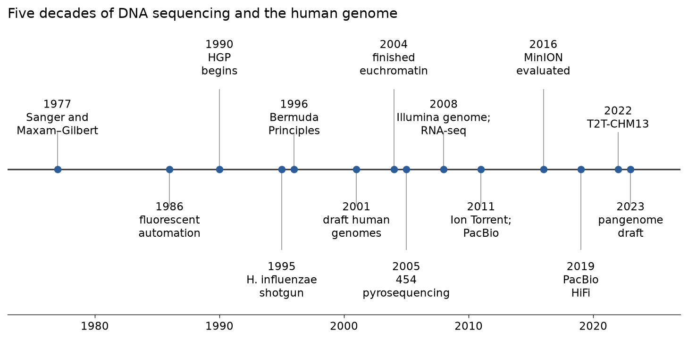
2.1.2 Sanger chain-termination sequencing from first principles
Frederick Sanger, Steve Nicklen and Alan Coulson described the method in 1977, and in the same year Sanger's group used an earlier version to determine the 5,386-nucleotide genome of bacteriophage φX174, the first complete DNA genome.[3][4] The method copies the template with a DNA polymerase and arranges for the copying to stop, at random, at every position of the sequence. The lengths of the stopped copies, and the identity of the base at which each stopped, reveal the sequence.
The chemistry of termination
A DNA polymerase extends a primer annealed to a single-stranded template. Each incoming deoxynucleoside triphosphate (dNTP: dATP, dCTP, dGTP or dTTP) pairs with the template base and is joined to the growing chain by a phosphodiester bond formed between the 3′-hydroxyl group (3′-OH) of the last nucleotide of the chain and the α-phosphate of the incoming dNTP. The 3′-OH is therefore indispensable: without it, the next nucleotide cannot be added.
A 2′,3′-dideoxynucleoside triphosphate (ddNTP) is identical to a dNTP except that the 3′ carbon of the sugar carries a hydrogen instead of a hydroxyl group. Polymerases accept ddNTPs as substrates, so a ddNTP can be incorporated opposite the complementary template base; once incorporated, it leaves the chain without a 3′-OH and synthesis stops. If the reaction contains mostly normal dNTPs and a small proportion of, for example, ddATP, then each growing chain has a small chance of stopping every time the polymerase meets a T in the template. Because there are billions of template molecules, the reaction produces a population of fragments that end at every A of the new strand. The original method used four separate reactions, one per ddNTP, and a radioactive label; the four sets of fragments were separated side by side on a polyacrylamide gel, and the sequence was read from the bottom of the gel (shortest fragments) to the top.
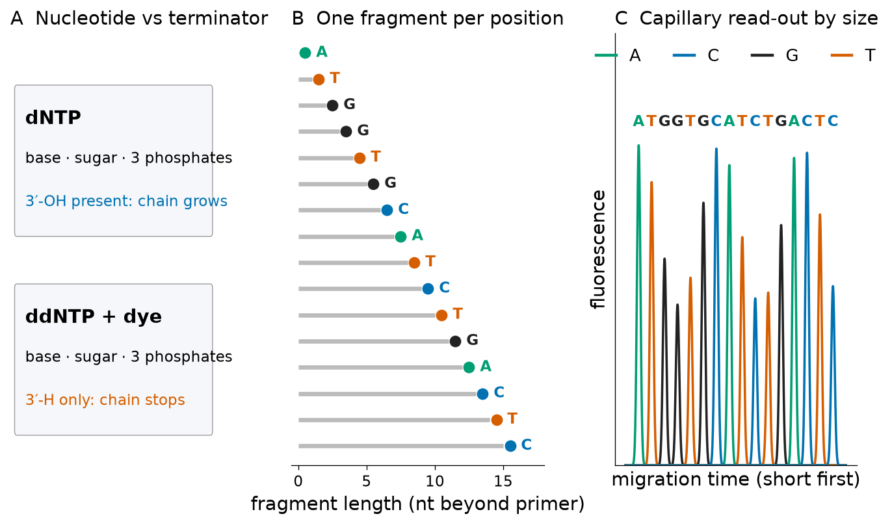
Dye terminators and capillary electrophoresis
Two refinements turned the method into the engine of the Human Genome Project. In 1986, Smith and colleagues at the California Institute of Technology replaced radioactivity with four fluorescent dyes, one per base, so that all fragments could be separated in a single lane and detected automatically by a laser as they passed a fixed point.[5] Later, the dyes were attached directly to the ddNTPs (dye terminators), so that one reaction tube contains all four terminators and every fragment carries the colour of the base at which it stopped. In parallel, slab gels were replaced by thin glass capillaries filled with a polymer matrix; an electric field drives the negatively charged fragments through the capillary, and shorter fragments move faster. Modern instruments run 8 to 96 capillaries at once and resolve fragments that differ by a single nucleotide over roughly 600–1,000 bases.[1]
The procedure in a modern laboratory is: (1) amplify the region of interest by PCR, or clone it into a plasmid; (2) remove unused primers and dNTPs; (3) run a cycle-sequencing reaction with a single primer, a thermostable polymerase, dNTPs and the four dye-labelled ddNTPs, repeating denaturation, annealing and extension so that fragments accumulate linearly; (4) remove unincorporated dye terminators; (5) inject the fragments into the capillary and record fluorescence over time. Because only one primer is used, the reaction produces one read from one strand; clinical laboratories normally sequence both strands with forward and reverse primers so that every base is read twice.
Reading a chromatogram
The raw output is four fluorescence traces, one per dye, recorded as a function of time. After corrections for dye mobility and spectral overlap, the base-calling software places a base call under each peak. A good chromatogram shows evenly spaced, sharp, non-overlapping peaks of roughly similar height with a flat baseline. Several regions are predictably poor: the first 20–40 bases after the primer (where fragments are too short to resolve and unincorporated dye produces "dye blobs"), and the end of the read, where peaks broaden and the spacing becomes irregular. Homopolymer runs and some sequence contexts produce characteristically small or large peaks, and a polymerase slippage at long runs of a single base can make the rest of the trace unreadable.
Most important for medicine is what happens when the template is a mixture. A person is diploid: a PCR product amplified from genomic DNA contains both the maternal and the paternal copy of the region. At a position where the two copies differ — a heterozygous single-nucleotide variant — the sequencing reaction produces two populations of fragments of the same length ending in different bases. The chromatogram then shows two overlapping peaks of about half height at that position, and the base caller reports either the taller of the two or an IUPAC ambiguity code (R for A/G, Y for C/T, W for A/T, S for G/C, K for G/T, M for A/C). Figure 3 shows the situation for the sickle-cell variant in the β-globin gene. A heterozygous insertion or deletion produces a different signature: the trace is clean up to the variant and becomes a superposition of two sequences shifted relative to each other after it, so that every subsequent position shows double peaks.
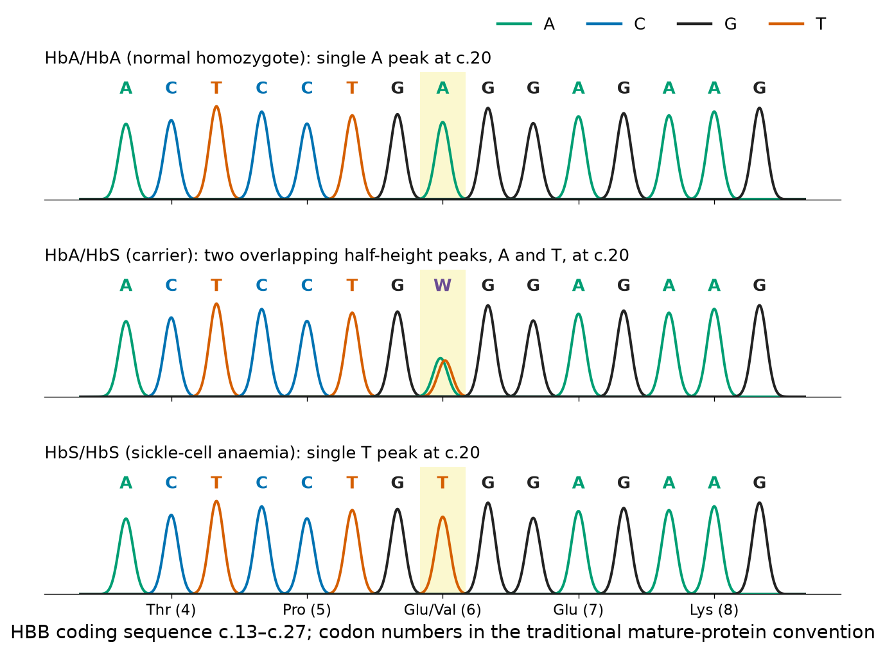
Common pitfalls when reading chromatograms
- A small second peak is not automatically a heterozygote. Background noise, dye blobs near the start of the read, and "pull-up" (spectral bleed from a very strong peak into another channel) also create secondary peaks. A true heterozygous site shows a secondary peak of roughly 30–60 % of the main peak, on both strands, and in a region of otherwise clean sequence.
- Allele drop-out. If a primer overlaps a polymorphism on one allele, that allele amplifies poorly and a heterozygote looks homozygous. This is why clinical assays place primers in regions without common variants and sequence both strands.
- Sanger sequencing cannot detect low-level mosaicism or a minor subclone present in less than about 15–20 % of molecules; deep NGS is needed for that.
2.1.3 Maxam–Gilbert chemical sequencing (historical)
Allan Maxam and Walter Gilbert published a different solution in the same year.[6] Instead of synthesising new DNA, they labelled one end of a DNA fragment with radioactive phosphorus and treated four portions of it with chemicals that modify and then cleave the backbone preferentially at particular bases: dimethyl sulphate at G, formic acid at A and G (purines), hydrazine at C and T (pyrimidines), and hydrazine in high salt at C only. The conditions were adjusted so that each molecule was cut, on average, about once. After electrophoresis, only the fragments that retained the labelled end were visible, and their lengths gave the positions of the cleaved bases. Comparing the four lanes (G, A+G, C+T, C) revealed the sequence.
Maxam–Gilbert sequencing had real advantages in the late 1970s — it worked directly on double-stranded DNA and did not need cloning into a single-stranded vector — and it was used to study protein–DNA contacts by "footprinting". It was nevertheless abandoned for routine sequencing because it required hazardous chemicals and large amounts of radioactivity, and because it could not be automated as easily as the enzymatic method. Sanger and Gilbert shared half of the 1980 Nobel Prize in Chemistry for these methods.
2.1.4 How much can a base call be trusted? Phred quality scores
A sequence without an error estimate is of limited use: a variant at a position where the base call is unreliable is not evidence of a mutation. In 1998, Brent Ewing and Phil Green introduced the program phred, which reads a Sanger trace, calls the bases and, for each call, estimates the probability that it is wrong from features of the trace (peak spacing, peak resolution, the ratio of the called peak to uncalled peaks).[7][8] The estimated error probability p is reported on a logarithmic scale as the Phred quality score:
| Q | Error probability p | Expected errors | Base-call accuracy | FASTQ character (Q+33) |
|---|---|---|---|---|
| 10 | 0.1 | 1 in 10 | 90 % | + |
| 20 | 0.01 | 1 in 100 | 99 % | 5 |
| 30 | 0.001 | 1 in 1,000 | 99.9 % | ? |
| 40 | 0.0001 | 1 in 10,000 | 99.99 % | I |
| 50 | 0.00001 | 1 in 100,000 | 99.999 % | S |
The thresholds Q20 and Q30 are used constantly in practice: "Q30 bases" means the fraction of bases with an estimated error rate of at most 1 in 1,000. During the Human Genome Project the standard for finished sequence was an error rate below 1 in 10,000, that is, Q40 on average.[9]
Why a logarithmic scale, and why you must never average Q values directly
Error probabilities span many orders of magnitude, and the logarithm makes them easy to compare and to store as small integers. The cost is that Q is a non-linear function of p. Suppose a read has two bases, one with Q = 10 (p = 0.1) and one with Q = 40 (p = 0.0001). The arithmetic mean of the Q values is 25, which suggests p ≈ 0.003. The correct expected number of errors is 0.1 + 0.0001 = 0.1001, i.e. a mean error probability of 0.05 per base, which corresponds to Q ≈ 13. Averaging Q values therefore overstates quality whenever qualities vary. The correct procedure is to convert each Q to p, average the p values (or sum them to obtain the expected number of errors in the read), and convert back. In the nanopore data analysed in Section 2.1.10 the median arithmetic mean of Q per read was 33.5, whereas the median accuracy predicted from the averaged probabilities was 97.8 % (Q ≈ 16.5) — close to the accuracy actually measured against the reference.
Try it yourself: Phred arithmetic in Python
The program converts four quality scores to error probabilities, prints the characters that encode a few scores in Phred+33, and decodes a short quality string back to numbers. chr() and ord() convert between integers and characters.
import math
for q in (10, 20, 30, 40):
p = 10 ** (-q / 10) # error probability from Q
print(f"Q{q}: p = {p:.4f} (1 error in {round(1/p):,} bases)")
# the ASCII character stored in a FASTQ file for each Q (Phred+33)
print("".join(chr(q + 33) for q in (0, 2, 10, 20, 30, 40, 41)))
print([ord(c) - 33 for c in "#+5?I"])A Phred score is only useful if it is calibrated, that is, if bases labelled Q30 really are wrong about once in a thousand times. Calibration can be tested when the true sequence is known. Figure 4B compares the quality reported by an Illumina MiSeq instrument with the error rate actually observed when its reads of the φX174 control genome are compared with the reference sequence (Section 2.1.10 explains the analysis). For reported scores above about 30 the agreement is good; for low reported scores the observed error rate is lower than reported, partly because the instrument is conservative and partly because the comparison method discards reads with many errors, which biases the observed rate downward. Base-quality recalibration in variant-calling pipelines exists because such deviations are common.
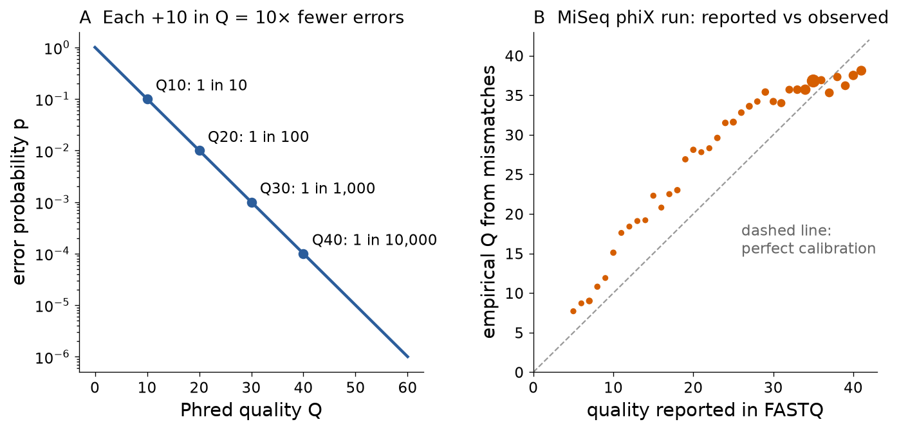
2.1.5 Next-generation sequencing I: Illumina sequencing by synthesis
Capillary sequencing reads one template population per capillary. To sequence a human genome many times over, the cost per base had to fall by several orders of magnitude, and this required reading millions of templates at the same time. The solution adopted by Illumina (originally Solexa) has three parts: a library of short fragments with known adapters, clonal amplification of each fragment on a glass surface, and cyclic sequencing with reversible terminators imaged by a camera. Bentley and colleagues used it in 2008 to sequence a human genome, and it has been the dominant source of sequence data ever since.[10][2]
Library preparation and adapters
Genomic DNA is fragmented (mechanically, by sonication, or enzymatically, for example by a transposase that cuts and inserts adapter sequences in a single step) to a few hundred base pairs. The ends are repaired, an A is added to each 3′ end, and double-stranded adapters are ligated. A finished library molecule (Figure 5A) contains, from one end to the other: a P5 sequence that hybridises to oligonucleotides on the flow cell; an optional index (i5), a short barcode that identifies the sample; the binding site for the read-1 sequencing primer; the genomic insert; the binding site for the read-2 primer; a second index (i7); and the P7 flow-cell sequence. Because every library from every sample carries its own index pair, dozens to thousands of samples can be pooled in one run and separated afterwards by reading the indices, a step called demultiplexing.
Bridge amplification and clusters
The pooled library is denatured and flowed over the flow cell, a glass slide whose surface is coated with two kinds of oligonucleotides complementary to P5 and P7. A single library molecule hybridises to a surface oligonucleotide and is copied by a polymerase; the copy bends over and hybridises to a nearby oligonucleotide of the other kind, forming a "bridge", which is copied again. Repeating this bridge amplification for a few dozen cycles produces a cluster: roughly a thousand identical copies of the original molecule packed into a spot less than a micrometre across (Figure 5B). The copies are needed because a single fluorescent molecule is too faint to image reliably with a camera. Newer instruments use patterned flow cells with nanowells and an isothermal amplification variant, but the principle — one cluster derived from one molecule — is the same.
Sequencing by synthesis with reversible terminators
After one strand is removed, the sequencing primer is annealed and each cycle proceeds as follows: (1) the four nucleotides, each carrying a different fluorescent dye and a chemically removable blocking group on the 3′-OH, are added together with a polymerase; (2) every cluster incorporates exactly one nucleotide, because the block prevents a second addition; (3) unincorporated nucleotides are washed away and the flow cell is imaged, so that each cluster appears in the colour of the base it has just added (Figure 5C); (4) the dye and the block are cleaved off, restoring a normal 3′-OH, and the next cycle begins. These reversible terminators are a modern version of Sanger's ddNTP: they stop synthesis, but only temporarily.[10] The number of cycles determines the read length; current instruments read 50 to 300 bases per read. Newer instruments use two dyes instead of four, encoding the bases as red, green, both or neither.
Paired-end reads
After read 1 is finished, the newly synthesised strand is removed, the clusters are regenerated by another round of bridge amplification, and the complementary strand is sequenced from the other adapter: read 2. The two reads of a pair come from the two ends of the same fragment, point towards each other, and are separated by a known approximate distance (the insert size). Paired-end information is extremely useful: it helps to place reads in repetitive regions where one read alone would map to many places, it reveals structural variants (pairs that map too far apart, too close together, or in the wrong orientation), and it doubles the data per cluster.
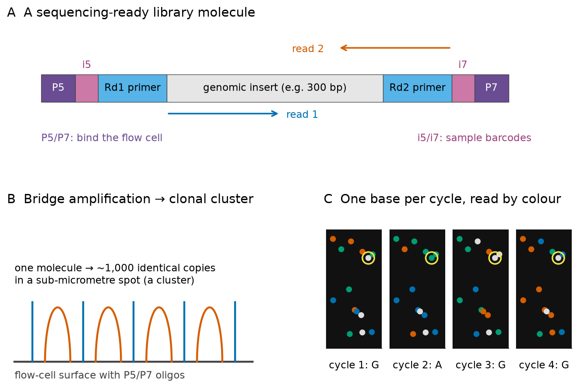
Why do errors accumulate towards the end of an Illumina read? In every cycle a small fraction of the molecules in a cluster fails to incorporate a nucleotide or incorporates two (because the block was missing or was removed too early). These molecules fall out of step with the rest of the cluster — phasing (lagging) and pre-phasing (leading) — and contribute light of the wrong colour in later cycles. Signal also decays as dyes are photobleached and molecules are lost. The fraction of out-of-step molecules grows with every cycle, so quality falls and substitution errors increase along the read, as the real data in Figures 7 and 8 show. Errors are overwhelmingly substitutions; insertions and deletions are rare because each cycle adds at most one base.[11]
2.1.6 Next-generation sequencing II: Ion Torrent and 454 pyrosequencing
454 pyrosequencing (historical)
The first commercial NGS instrument, from 454 Life Sciences (later Roche), was described by Margulies and colleagues in 2005.[12] Library fragments were attached to beads and amplified in the water droplets of an oil emulsion (emulsion PCR), so that each bead carried copies of one molecule. Beads were deposited in a plate with about a million picolitre wells. Instead of terminators, the instrument flowed one nucleotide species at a time. When the flowed nucleotide was complementary to the next template base, the polymerase incorporated it and released pyrophosphate, which an enzymatic cascade (ATP sulphurylase and luciferase) converted into a flash of light. If the template contained a run of three identical bases, three nucleotides were incorporated in the same flow and the light was approximately three times brighter. This is the weakness of the method: the intensity of light is only roughly proportional to the length of a homopolymer, so errors in homopolymer length — insertions and deletions — dominated its error profile. Reads reached several hundred bases, and 454 sequencing produced the first personal human genome by NGS and many early bacterial and metagenomic projects. Roche stopped supporting the platform in 2016.[2]
Ion Torrent semiconductor sequencing
Ion Torrent, described by Rothberg and colleagues in 2011, retains the bead, emulsion-PCR and one-nucleotide-per-flow design of 454 but replaces light detection by a direct electrical measurement.[13] Every time a polymerase incorporates a nucleotide it releases a proton (H+). Each well of the chip sits on an ion-sensitive field-effect transistor that detects the resulting small change in pH. No cameras, lasers or modified nucleotides are needed, which makes the instrument fast and relatively inexpensive, and Ion Torrent has been widely used for targeted clinical panels and microbial sequencing. Because it inherits the flow-based design, it also inherits the homopolymer problem: a run of identical bases gives a proportionally larger voltage change that becomes harder to quantify as the run grows, and indels in homopolymers are its characteristic error.[14]
2.1.7 Third-generation sequencing: PacBio SMRT and Oxford Nanopore
Short reads have a fundamental limitation: a 150-base read cannot be placed uniquely in a repeat longer than 150 bases, and it cannot show which variants lie on the same chromosome copy (the phase or haplotype). Third-generation technologies read single molecules, without amplification, and produce reads of tens to hundreds of kilobases.[15]
Pacific Biosciences single-molecule real-time (SMRT) sequencing
In SMRT sequencing a single DNA polymerase is immobilised at the bottom of a zero-mode waveguide (ZMW), a nanometre-scale hole in a metal film, so small that laser light only illuminates a tiny volume at its bottom, where the polymerase sits.[16] The four nucleotides carry different fluorescent dyes attached to the terminal phosphate. When the polymerase holds a nucleotide in its active site for the few milliseconds needed to incorporate it, the dye stays in the illuminated volume and produces a pulse of light; the dye is cleaved off with the pyrophosphate and diffuses away, so the DNA product is natural. The order of coloured pulses in a ZMW gives the sequence (Figure 6A).
Raw single-pass reads have an error rate of the order of 10 %, dominated by insertions and deletions that occur randomly rather than systematically. PacBio turned this randomness into an advantage. The library molecule is closed into a circle with hairpin adapters (a SMRTbell), so the polymerase can go round it many times. Combining several passes of the same molecule into a consensus — circular consensus sequencing (CCS) — removes random errors. Wenger and colleagues showed in 2019 that CCS of 13.5-kb libraries produced reads with an average accuracy of 99.8 %, now called HiFi reads, and used them to assemble and call variants in a human genome.[17]
Oxford Nanopore sequencing
In nanopore sequencing a protein pore is embedded in an electrically resistant membrane, and a voltage is applied across the membrane so that an ionic current flows through the pore. A motor protein ratchets a single strand of DNA through the pore at a controlled speed of hundreds of bases per second. The nucleotides that occupy the narrowest part of the pore at a given moment — a stretch of about five to nine bases, a k-mer — obstruct the current to a characteristic degree, so the current trace is a series of steps (Figure 6B). A neural-network base caller translates the trace into a sequence.[18][19] The devices range from a pocket-sized USB sequencer (MinION) to high-throughput instruments with thousands of channels.
Several properties make nanopore sequencing distinctive. Read length is limited mainly by the length of the DNA molecules that survive extraction: ultra-long protocols produce reads of hundreds of kilobases.[15] Data stream in real time, so analysis can start, and sequencing of a molecule can even be stopped, while the run is in progress. And because the signal is produced by the native molecule, chemical modifications that alter the current can be detected directly.
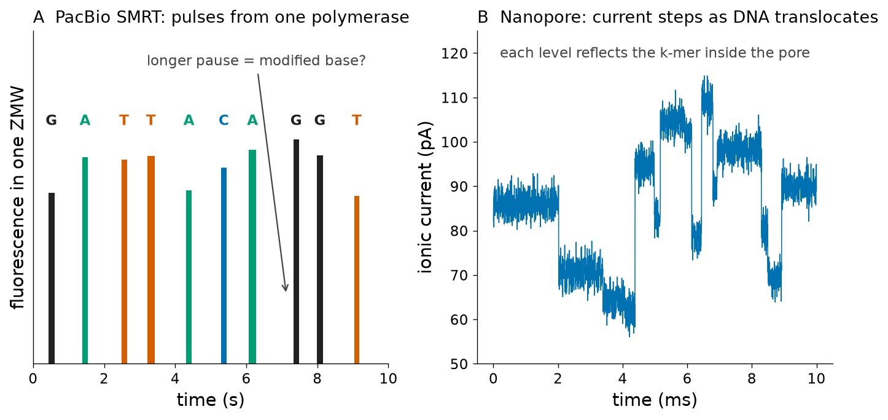
Base modifications and direct RNA sequencing
Cytosine methylation (5-methylcytosine, 5mC) in CpG dinucleotides regulates gene expression and is altered in cancer. In short-read sequencing it must be detected indirectly, after bisulphite treatment converts unmethylated C to U. Both single-molecule technologies can detect modifications without chemical conversion: PacBio through the kinetics of the polymerase, which pauses at modified bases,[20] and Oxford Nanopore through the altered current signal.[21] Nanopores can also read RNA molecules directly, without converting them into cDNA. Garalde and colleagues demonstrated direct RNA sequencing in 2018: a motor protein feeds the poly(A) tail of an mRNA into the pore and the molecule is read from 3′ to 5′, preserving information on poly(A) length, isoform structure and RNA modifications such as N6-methyladenosine.[22]
Clinical connection: speed and long reads at the bedside
Long reads have clinical value whenever the variant is structural or lies in a repetitive region: expansions of short tandem repeats (for example in Huntington disease or fragile X syndrome), large deletions, gene–pseudogene conversions, and the phasing of two variants in the same gene to decide whether they are on the same or different chromosome copies (which determines whether a recessive disease is present). The β-globin cluster itself contains a pseudogene (HBBP1) and highly similar duplicated genes (HBG1 and HBG2), a typical setting in which long reads remove mapping ambiguity (see Figure 12).
2.1.8 Sequencing RNA
Most RNA sequencing does not read RNA itself. Instead, RNA is first copied into complementary DNA (cDNA) by reverse transcriptase, an enzyme from retroviruses that synthesises DNA on an RNA template; the cDNA is then made double-stranded and converted into a sequencing library like any other DNA. The scientific questions differ from genome sequencing — which genes are expressed, how strongly, and in which isoforms — and they are developed in Section 2.4. Here we cover the laboratory choices that determine what an RNA-seq library contains.[23][24]
Selecting the RNA of interest
Ribosomal RNA (rRNA) accounts for the large majority of the RNA mass in a cell, and sequencing total RNA would spend most reads on it. Two strategies remove it. Poly(A) selection captures messenger RNAs by their poly(A) tails on oligo(dT) beads; it yields clean mRNA libraries but loses non-polyadenylated transcripts (histone mRNAs, many long non-coding RNAs, most bacterial RNAs) and is biased towards the 3′ end when RNA is degraded. rRNA depletion removes rRNA by hybridisation to complementary probes and keeps everything else, including pre-mRNA and non-coding RNA; it is the method of choice for degraded clinical samples such as formalin-fixed tissue and for bacteria, whose mRNAs lack poly(A) tails. Small RNAs (microRNAs) require dedicated size-selected protocols.
Strandedness
Double-stranded cDNA does not, by itself, remember which strand was the original RNA. In an unstranded library a read can come from either strand, so transcription of overlapping genes on opposite strands, and antisense transcription, cannot be resolved. Stranded (strand-specific) protocols preserve this information. The most widely used, the dUTP method, incorporates dUTP instead of dTTP during second-strand synthesis and then destroys the second strand enzymatically, so that only the first strand is sequenced; a systematic comparison by Levin and colleagues found it among the best-performing strand-specific methods.[25] Knowing the protocol matters for analysis: counting software must be told whether reads are expected on the sense strand, the antisense strand, or either.
Misconception: "RNA-seq reads are RNA sequences"
With the exception of nanopore direct RNA sequencing, an RNA-seq read is the sequence of a DNA copy. It inherits the biases of reverse transcription and PCR (for example, under-representation of GC-rich fragments and duplicate reads from over-amplification), and in many protocols a read reports the complement of the RNA. Base modifications in the RNA are lost.
2.1.9 The FASTQ format: reads with qualities
Almost every sequencing instrument delivers reads in the FASTQ format, a plain-text format that extends FASTA with a quality score for every base.[26] Each record occupies four lines: (1) a header beginning with @ followed by the read identifier and optional description; (2) the sequence; (3) a separator line beginning with +, optionally repeating the identifier; (4) the quality string, with exactly one character per base. Each quality character encodes a Phred score as ASCII code minus 33 (Phred+33, the standard since Illumina pipeline version 1.8). Older Illumina files used an offset of 64, and very old Solexa files used a different, odds-based score; Cock and colleagues documented these variants and the confusion they caused.[26] Paired-end data are delivered as two files (_1 and _2) whose records are in the same order.
Here is the first record of a real run used throughout this section, the Illumina MiSeq paired-end run ERR333806 of the φX174 control library (ENA study PRJEB2926, public since 29 August 2013). The full dataset — 1,513,734 read pairs of 130 bases each, 393,570,840 bases in total — was downloaded from the ENA FTP server and its MD5 checksums were verified.
The header follows the older Illumina convention: instrument name (MS5_7982), lane (1), tile (1), the x and y coordinates of the cluster on the tile (1701, 15175), the index (#1) and the read number (/1). This particular read illustrates a common failure: from base 45 onwards the sequence contains many N (no call possible) with quality character ! (Q0), a sign that the cluster was at the very edge of the first tile and the image was poor. Such reads are removed by quality filtering.
Try it yourself: parse a FASTQ file with Biopython
Download ERR333806_1.fastq.gz from the ENA browser link above (about 144 MB; for a quicker test, any small FASTQ file works). Bio.SeqIO.parse(handle, "fastq") returns one SeqRecord per read; the Phred scores are already decoded in letter_annotations["phred_quality"]. The program prints the first record and the mean quality of the first and last ten cycles over the first 10,000 reads.
import gzip
from Bio import SeqIO
with gzip.open("ERR333806_1.fastq.gz", "rt") as handle:
records = SeqIO.parse(handle, "fastq")
first = next(records)
print(first.id, len(first.seq))
print(first.seq[:40])
print(first.letter_annotations["phred_quality"][:40])
# mean quality of positions 1-10 and 121-130 over the first 10,000 reads
n, head, tail = 1, sum(first.letter_annotations["phred_quality"][:10]), sum(first.letter_annotations["phred_quality"][-10:])
for rec in records:
q = rec.letter_annotations["phred_quality"]
head += sum(q[:10]); tail += sum(q[-10:]); n += 1
if n == 10000: break
print(f"reads: {n}; mean Q cycles 1-10: {head/(10*n):.1f}; cycles 121-130: {tail/(10*n):.1f}")Plotting the distribution of quality at each cycle over all reads is the first quality-control step of any sequencing project (tools such as FastQC do it automatically). Figure 7 shows it for the complete run. In read 1, 87.7 % of all bases have Q ≥ 30; in read 2 the figure is 68.2 %. Both reads start with a few lower-quality cycles (while the instrument calibrates cluster intensities), reach a plateau, and decline towards the 3′ end. Read 2 is systematically worse because its clusters have been regenerated after 130 cycles of chemistry. The lower edge of the distribution matters more than the median: in read 2 a tenth of the bases at the last cycles have quality below about 10.
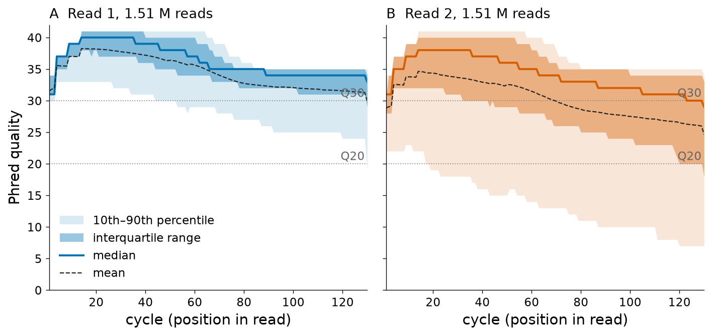
2.1.10 Error profiles: what kind of mistakes each technology makes
Quality scores are the instrument's own estimate of error. The real error rate can be measured when the true sequence is known, which is why every Illumina run includes a spike-in of φX174, a small genome sequenced to very high accuracy. To measure the error profile, the reads of ERR333806 were compared with the φX174 reference genome (RefSeq NC_001422.1, 5,386 bp). The first 200,000 pairs of the run were used (13 % of the run, enough for a stable estimate): each read was placed on the genome by a unique exact match of a 20-base seed, the read and the reference were compared base by base without gaps, and reads with more than 15 mismatches were discarded as likely mis-placements. In total 182,732 read-1 and 172,251 read-2 sequences were aligned.
Two findings stand out. First, five positions of the genome (587, 833, 2731, 2811 and 3133) showed the "wrong" base in essentially every read. These are not sequencing errors but genuine differences between the φX174 strain used as the Illumina control and the reference sequence deposited decades earlier; they were masked before computing error rates. This is a general lesson: a mismatch that appears consistently in all reads at the same position is biology (or a reference error), whereas sequencing errors are scattered. Second, the substitution rate grows along the read (Figure 8A). For read 1 it was 0.069 % over the first ten cycles and 0.274 % over the last ten, 0.118 % overall (empirical Q ≈ 29); for read 2 it was 0.357 % rising to 1.450 %, 0.661 % overall (Q ≈ 22). The final cycle of each read shows a jump because the last base lacks information from the following cycle that the base caller uses to correct phasing.
The error profile of nanopore reads is different in kind. To measure it, a lambda-phage control run from the same ENA study was used (MinION run SRR37543653, 8,314 reads, 17.5 Mb; the control is a 3.6-kb fragment of the lambda genome). All 5,758 reads of at least 500 bases were aligned to the lambda reference (NC_001416.1) with the Smith–Waterman local-alignment algorithm in Biopython after locating each read with exact 15-base seeds; 5,241 reads aligned over more than 90 % of their length. Across all aligned columns, 1.56 % were mismatches, 1.10 % insertions and 1.56 % deletions (Figure 8B): indels are as frequent as substitutions. The median per-read identity was 97.7 % (Figure 8C), with a long tail of poorer reads. A related phiX control run in the same study (SRR37543650) illustrates another practical point: only 54 of its 886 reads longer than 300 bases came from φX174, because reads from the other barcoded samples on the same flow cell had been assigned to it; barcode misassignment is a real source of contamination in multiplexed runs.
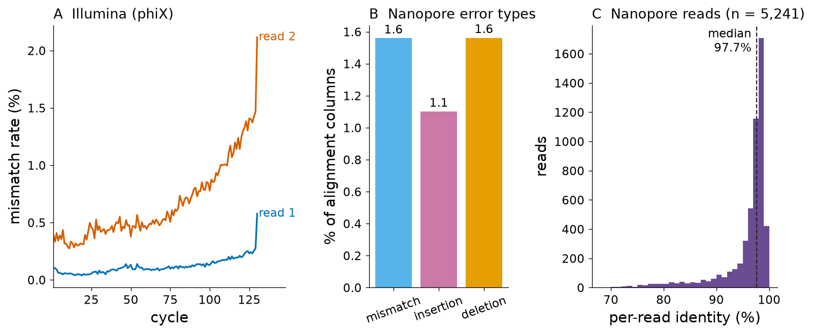
Every technology therefore has a characteristic error "signature", and analysis software is designed around it.[2][27][28] Illumina: low overall error, almost only substitutions, increasing along the read, with a bias against very GC-rich or GC-poor fragments. Ion Torrent and 454: indels in homopolymers. PacBio HiFi: high accuracy with residual errors in homopolymers. Nanopore: errors concentrated in homopolymers and in some sequence motifs, mixed substitutions and indels, continuously improving with new pores and base callers. Because nanopore errors are partly systematic (the same motif tends to be miscalled in the same way), averaging many reads removes most but not all of them.
Key ideas: error profiles
- Consistent mismatches in all reads are variants (or reference errors); scattered mismatches are sequencing errors.
- Illumina errors are substitutions that increase along the read and are higher in read 2.
- Flow-based (454, Ion Torrent) and nanopore errors include insertions and deletions, especially in homopolymers.
- Random errors are removed by consensus (high coverage, circular consensus); systematic errors are not.
2.1.11 Coverage, depth and the Lander–Waterman model
Reads are sampled more or less at random from the genome. Two words describe how much sequence has been collected. Depth (or read depth) at a position is the number of reads that overlap it. Coverage is used both for the mean depth ("30× coverage") and for the fraction of the genome covered by at least one read ("98 % coverage"); the context usually makes the meaning clear. If N reads of length L are sampled from a genome of length G, the mean depth is
In 1988 Eric Lander and Michael Waterman analysed random sampling of clones mathematically, and their results became the basis for planning genome projects.[29] If read start positions are random and independent, the depth at a given base follows, to a very good approximation, a Poisson distribution with mean c:
The consequences are sobering. At 1× coverage, 36.8 % of the genome is not sequenced at all; at 3×, 5.0 %; at 5×, 0.67 %; at 8×, 0.034 % (Figure 9B). Because the curve flattens, the last few per cent of a genome are very expensive to obtain by random sampling, which is why the Human Genome Project combined random sequencing with targeted "finishing" of gaps.
From reads to gaps: the Lander–Waterman expected number of contigs
Suppose two reads must overlap by at least T bases for an assembler to detect the overlap, and let θ = T/L. A read is the last of a contig ("island") if no other read starts within the next L − T bases. With reads starting at random at a rate N/G per base, the probability of no start in that window is e−N(L−T)/G = e−c(1−θ). The expected number of contigs is therefore approximately
The number of contigs first increases with coverage (more reads create more islands) and then falls exponentially once islands begin to merge. Real assemblies have more gaps than this formula predicts because repeats, not random sampling, cause most breaks (Section 2.2.2).
Try it yourself: how many reads do I need?
import math
G = 3.1e9 # haploid human genome (bp), approximate
L = 150 # read length (bp)
for c in (1, 5, 10, 30):
N = c * G / L # number of reads needed
uncovered = math.exp(-c) # Poisson P(depth = 0)
print(f"c = {c:>2}x reads = {N:,.0f} fraction uncovered = {uncovered:.2e} "
f"bases uncovered = {uncovered*G:,.0f}")Clinical whole-genome sequencing usually targets about 30×, not because 10× leaves many bases unsequenced but because a heterozygous variant must be seen on several reads of each allele to be called reliably, and because real coverage is far less uniform than Poisson.
The last point can be checked with the φX174 data. Across the 354,983 aligned reads the mean depth was 8,566 (expected from N·L/G: 8,568), with a standard deviation of 781. For a Poisson distribution the variance equals the mean, so the standard deviation should be about √8,566 ≈ 93; the observed variance is 71 times larger than the mean (Figure 9C). Library preparation, PCR amplification and sequence-dependent cluster efficiency all make some regions over- and others under-represented.[28] The same overdispersion will reappear in RNA-seq counts (Section 2.4.6), where it is the reason for using the negative binomial distribution.
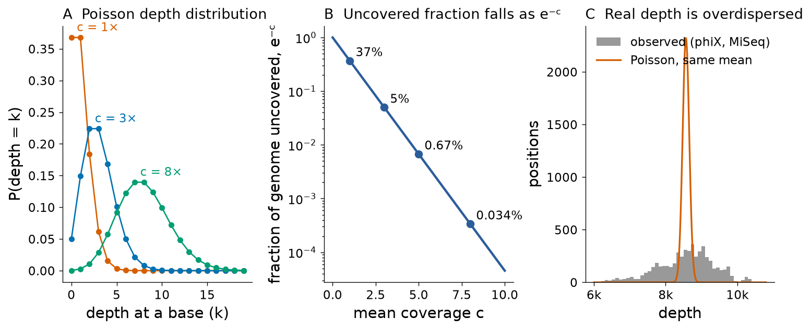
2.1.12 Comparing sequencing platforms
No platform is best for every purpose. The choice depends on what is being measured (a single amplicon, a gene panel, a whole genome, a transcriptome), on whether accuracy, read length, throughput or turnaround time matters most, and on cost. The table summarises typical characteristics as reported in the cited reviews and primary papers, with the values measured in this unit where available; specifications change quickly, so dates are given.
| Technology | Signal | Read length | Accuracy and dominant errors | Throughput per run | Typical uses | Sources |
|---|---|---|---|---|---|---|
| Sanger (capillary, dye terminators) | fluorescent fragment lengths | ≈ 600–1,000 bases | ≈ 99.99 % in the high-quality region; poor first ≈ 30 bases | ≈ 0.1 Mb (96 capillaries) | variant confirmation, single genes, plasmids | [1] |
| 454 pyrosequencing (discontinued 2016) | light from pyrophosphate | ≈ 400–700 bases | homopolymer indels | ≈ 0.5 Gb | historical: early NGS genomes, metagenomics | [12][2] |
| Illumina SBS | fluorescent reversible terminators | 2 × 50 to 2 × 300 bases | ≈ 0.1–1 % substitutions, rising along the read; this unit: 0.12 % (read 1), 0.66 % (read 2) | gigabases (benchtop) to terabases (production) | genomes, exomes, RNA-seq, panels, single-cell | [10][2][11] |
| Ion Torrent | pH change (protons) | ≈ 200–600 bases | ≈ 1 %, homopolymer indels | ≈ 1–50 Gb | targeted clinical panels, microbes | [13][14] |
| PacBio HiFi (CCS) | fluorescent pulses in ZMWs, multiple passes | ≈ 10–25 kb | ≥ 99.8 % (Q27+); residual homopolymer errors | tens of gigabases | de novo assembly, structural variants, phasing, methylation | [17][15] |
| Oxford Nanopore | ionic current through a protein pore | kilobases to hundreds of kb (limited by DNA length) | ≈ 95–99 % per read depending on chemistry; mixed substitutions and indels; this unit: median 97.7 % | gigabases (MinION) to terabases (PromethION) | assembly, structural variants, rapid diagnostics, direct RNA, methylation | [18][15][19] |
The cost of sequencing fell faster than almost any other technology. According to the cost data collected by the US National Human Genome Research Institute at its funded centres, the cost of sequencing a human-sized genome fell from about US$95 million in September 2001 to about US$525 in 2022, with a sharp change in slope in 2008 when centres adopted NGS.[W1] These figures include reagents, labour and instrument depreciation but not the clinical interpretation, which today often costs more than the sequencing.
Key ideas: Section 2.1
- Sanger sequencing reads fragment lengths generated by random chain termination with ddNTPs; a heterozygous SNV produces superimposed half-height peaks.
- Phred quality Q = −10·log10p; average error probabilities, not Q values.
- Illumina sequencing reads millions of clonal clusters in parallel with reversible terminators; errors are substitutions that accumulate along the read.
- Single-molecule technologies (PacBio, Oxford Nanopore) give long reads and detect base modifications directly; nanopores can read native RNA.
- RNA is normally sequenced as cDNA; poly(A) selection, rRNA depletion and strandedness determine what a library contains.
- Under random sampling the uncovered fraction is e−c; real coverage is overdispersed relative to Poisson.
Bridge
Reads become useful only when they are placed relative to each other (assembly, Section 2.2) or to a reference (read mapping, an application of the alignment algorithms of Unit 4A). FASTQ files from public projects are archived in the Sequence Read Archive and ENA, described in Unit 3. The connection between quality scores and alignment scoring is developed further in the companion lecture on sequence alignment.
Section 2.2Genome sequencing, the Human Genome Project, genomics and genome browsers
Curriculum item 2.2: «Secuenciación de genomas. El proyecto genoma humano. Genómica. Exploradores genómicos» — Genome sequencing. The Human Genome Project. Genomics. Genome browsers.
2.2.1 Strategies: hierarchical (clone-by-clone) versus whole-genome shotgun
A sequencing read is short compared with a chromosome: a 1,000-base Sanger read is about one hundred-thousandth of human chromosome 11. To sequence a genome one must break it into pieces, read the pieces, and put the information back together. Two strategies dominated the history of the field.
In the hierarchical or clone-by-clone strategy, the genome is first cut into large fragments of 100–200 kb that are propagated in bacteria as bacterial artificial chromosomes (BACs). A physical map is built by "fingerprinting" the clones (digesting each with restriction enzymes and comparing the fragment patterns) so that overlapping clones can be ordered along each chromosome. A minimal set of overlapping clones, the tiling path, is chosen, and each BAC is then sequenced separately by shotgun sequencing and assembled. Because each assembly problem involves only 100–200 kb, repeats that occur elsewhere in the genome do not confuse it, and the map tells where each BAC belongs. The public Human Genome Project used this approach.[30]
In the whole-genome shotgun (WGS) strategy, the entire genome is fragmented at random, the fragments are sequenced (typically from both ends, giving "mate pairs" from clones of known size), and a computer assembles the whole genome at once. The approach skips the slow mapping step, but the assembler must cope with all the repeats of the genome simultaneously. In 1995 Fleischmann, Venter and colleagues used WGS to sequence the 1.83-Mb genome of the bacterium Haemophilus influenzae, the first genome of a free-living organism.[31] Celera Genomics later applied WGS to the human genome.[32] With NGS, and now with long reads, whole-genome shotgun sequencing has become the standard for essentially all genome projects.
2.2.2 Genome assembly: overlap–layout–consensus and de Bruijn graphs
Assembly is the computational reconstruction of a genome sequence from reads. An assembler produces contigs (contiguous sequences with no gaps) and, when paired reads or other long-range information link contigs in a known order and approximate distance, scaffolds (ordered contigs separated by gaps of estimated length, written as runs of N).[33]
Overlap–layout–consensus (OLC)
The classical approach, used for Sanger reads and again for modern long reads, has three steps. Overlap: compare every read with every other read and record significant overlaps (a suffix of one read matching a prefix of another, allowing for sequencing errors). Layout: build a graph in which reads are nodes and overlaps are edges, simplify it, and find paths through it that correspond to contigs. Consensus: align the reads along each path and take a majority vote (weighted by quality) at every column to obtain the final sequence. All-against-all overlap computation scales with the square of the number of reads, which became impractical when NGS produced hundreds of millions of short reads.
De Bruijn graphs
Pevzner, Tang and Waterman proposed in 2001 a different representation that avoids comparing reads with each other.[34] Every read is broken into all its overlapping substrings of length k (k-mers). In the de Bruijn graph each distinct (k−1)-mer is a node and each k-mer is a directed edge from its first k−1 bases to its last k−1 bases. Reads no longer need to be compared: two reads that overlap share k-mers and are therefore automatically connected through the same nodes. The genome corresponds to a path that uses every edge once, an Eulerian path, which can be found in time proportional to the number of edges.[35] Short-read assemblers such as Velvet[36] were built on this idea. In practice, assemblers do not search for a single Eulerian path (there may be very many); they compress non-branching stretches of the graph into unitigs and report those as contigs.
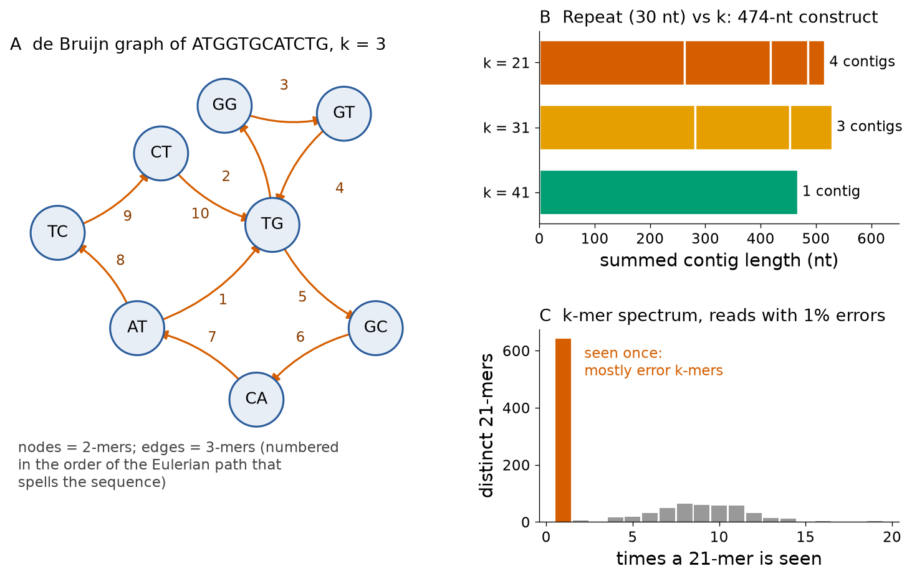
Try it yourself: a de Bruijn graph and N50 in a few lines of Python
The function builds the graph as a dictionary from (k−1)-mers to their successors. The five overlapping "reads" cover HBB c.1–c.21. Look at the node TGA: it has two successors because the trinucleotide TGA occurs twice (in CTGACT and in CCTGAG), so even this 21-nt sequence contains a repeat for k = 4.
from collections import defaultdict
def de_bruijn(reads, k):
graph = defaultdict(list) # (k-1)-mer -> list of successor (k-1)-mers
for r in reads:
for i in range(len(r) - k + 1):
kmer = r[i:i+k]
graph[kmer[:-1]].append(kmer[1:])
return graph
def n50(lengths):
lengths = sorted(lengths, reverse=True); half = sum(lengths) / 2; acc = 0
for i, l in enumerate(lengths, start=1):
acc += l
if acc >= half: return l, i # (N50, L50)
reads = ["ATGGTGCAT", "GTGCATCTG", "CATCTGACT", "CTGACTCCT", "ACTCCTGAG"] # HBB c.1-c.21
g = de_bruijn(reads, 4)
for node in sorted(g): print(node, "->", sorted(set(g[node])))
print("N50, L50 of contigs [100, 80, 60, 40, 30, 20, 10, 10]:", n50([100, 80, 60, 40, 30, 20, 10, 10]))To see how the method behaves, a slightly larger toy assembler (the same idea plus compression of unbranched paths into contigs) was applied to the 444-nucleotide coding sequence of HBB (RefSeq NM_000518.5). With 222 error-free reads of 40 nt (20× coverage) and k = 21, the graph contained 422 distinct 21-mers and produced a single contig of 442 nt; the two missing nucleotides at the ends were not covered by any read, exactly the kind of loss predicted by Lander–Waterman sampling. When 1 % random substitutions were introduced into the reads, the number of distinct k-mers rose to 1,066 and the graph shattered into 114 contigs, the longest of only 59 nt: every error creates up to k false k-mers, which form "tips" and "bubbles" in the graph. Discarding k-mers seen only once — those in the tall left peak of the k-mer spectrum in Figure 10C — restored a 441-nt contig. Error correction by k-mer frequency is a standard step in real assemblers.
Repeats: the central difficulty
Assembly is hard not because of sequencing errors but because of repeats: sequences that occur more than once in the genome, such as transposable elements (Alu elements alone occur over a million times in the human genome), segmental duplications, centromeric satellites and multicopy gene families.[37] If a repeat is longer than the reads (in OLC) or than the k-mers (in a de Bruijn graph), reads from different copies are indistinguishable, the graph merges the copies into a single node, and the assembler cannot know which flanking sequence connects to which. It must stop the contig at the repeat or risk a misassembly. Figure 10B shows this directly. The remedies are longer reads that span the repeat, paired reads with known spacing, and long-range linking data; this is why long-read sequencing finally completed the human genome (Section 2.2.4).
Measuring assembly contiguity: N50 and L50
An assembly is described by the number and the lengths of its contigs or scaffolds. The most common summary is N50: sort the contigs from longest to shortest and add their lengths until the running total reaches half the total assembly length; the length of the contig at which this happens is the N50, and the number of contigs needed is the L50. Equivalently, half of the assembled bases lie in contigs of length N50 or longer. For contigs of 100, 80, 60, 40, 30, 20, 10 and 10 kb (total 350 kb), the running sums are 100 and 180 kb; 180 ≥ 175, so N50 = 80 kb and L50 = 2 (Figure 11A).
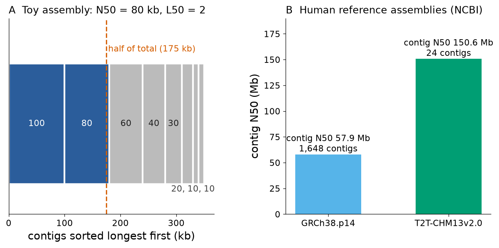
Pitfall: N50 measures contiguity, not correctness
An assembler can increase its N50 by joining contigs wrongly. N50 also depends on the total length used as the denominator; NG50 uses the expected genome size instead of the assembly size so that assemblies of different sizes can be compared. Correctness must be checked separately, for example by comparison with a reference, with an independent physical map, or by the completeness of conserved single-copy genes.
2.2.3 The Human Genome Project (1990–2003)
The Human Genome Project (HGP) was an international public effort, led by the US National Institutes of Health and Department of Energy together with the Wellcome Trust in the United Kingdom and partners in France, Germany, Japan and China, to determine the sequence of the human genome. It started formally in 1990 with a 15-year plan and was declared complete in April 2003, two years ahead of schedule.[38] Its goals went beyond the sequence itself: genetic and physical maps of the human genome, the genomes of model organisms (Escherichia coli, yeast, the nematode Caenorhabditis elegans, the fruit fly and the mouse), sequencing technology, bioinformatics tools, and a programme on ethical, legal and social implications (ELSI) that received a fixed share of the budget.
The public consortium and Celera
The International Human Genome Sequencing Consortium (IHGSC), comprising twenty centres in six countries, followed the hierarchical strategy and released its data daily under the Bermuda Principles (Section 2.3.3). In 1998 Craig Venter founded the company Celera Genomics with the declared aim of sequencing the genome faster by whole-genome shotgun, using the then-new capillary sequencers. The resulting competition accelerated both efforts. On 26 June 2000 the two groups jointly announced working drafts, and in February 2001 they published them back to back: the consortium in Nature[30] and Celera in Science.[32] The Celera assembly also used the public data, which were freely available, a point that has fed a long debate on how much each strategy contributed.
The drafts covered roughly 90 % of the euchromatic genome (the gene-rich, less condensed portion) with many gaps and errors. They nonetheless overturned expectations. The consortium estimated about 30,000–40,000 protein-coding genes,[30] far fewer than the figure of about 100,000 found in textbooks of the 1990s, and showed that about half of the genome consists of transposable-element-derived repeats. The "finished" euchromatic sequence, published in 2004, had 2.85 billion nucleotides interrupted by 341 gaps, covered about 99 % of the euchromatin with an error rate of about one per 100,000 bases, and revised the gene count to 20,000–25,000.[9] Today's annotations (GENCODE/Ensembl, RefSeq) list about 20,000 protein-coding genes.
Misconception: "the Human Genome Project sequenced the complete genome"
The 2003–2004 sequence was complete for the euchromatin only. Centromeres, the short arms of the acrocentric chromosomes (13, 14, 15, 21 and 22, which carry the ribosomal RNA genes), large segmental duplications and other heterochromatic regions — about 8 % of the genome — remained missing or were represented by models until 2022. Also, the reference genome is not "the" human genome of one person: it is a mosaic of DNA from a small number of anonymous donors, and one donor contributes most of it.[39]
2.2.4 After the HGP: GRCh38, a complete telomere-to-telomere genome and the human pangenome
Since 2007 the reference has been maintained by the Genome Reference Consortium (GRC), which releases major assemblies (GRCh37 in 2009, GRCh38 in 2013) and "patches" that correct or add regions without changing chromosome coordinates. GRCh38 added alternate sequences for highly variable regions such as the major histocompatibility complex and replaced centromere gaps by modelled sequences.[39] The Ensembl REST service reports the current human assembly as GRCh38.p14 (GenBank accession GCA_000001405.29, assembly date December 2013), with a primary "golden path" length of 3,099,750,718 bp (Ensembl release 116, queried 18 October 2026). The NCBI Assembly record for the RefSeq version of the same assembly (GCF_000001405.40) lists a contig N50 of 57.9 Mb and a scaffold N50 of 67.8 Mb.
In 2022 the Telomere-to-Telomere (T2T) Consortium published the first complete sequence of a human genome, T2T-CHM13.[40] The DNA came from a complete hydatidiform mole (CHM13), an abnormal conceptus with two identical copies of a paternal genome, which removes the problem of distinguishing two different haplotypes. The assembly combined PacBio HiFi reads (accurate, about 20 kb) with ultra-long Oxford Nanopore reads (over 100 kb) to resolve centromeric satellites and segmental duplications. The 3.055-Gb sequence is gapless for all 22 autosomes and the X chromosome, corrects errors in GRCh38, and adds nearly 200 million base pairs of new sequence containing 1,956 gene predictions, 99 of them predicted to be protein-coding.[40] The version T2T-CHM13v2.0 adds a Y chromosome from another individual; its NCBI record (GCF_009914755.1) lists 24 contigs with a total length of 3,117,275,501 bp, one per chromosome (Figure 11B).
A single reference, however complete, cannot represent human diversity: reads from regions that are absent from or very different in the reference map poorly, and variants there are missed. The Human Pangenome Reference Consortium published in 2023 a first draft pangenome built from 47 phased diploid assemblies of individuals of diverse ancestry, represented as a graph in which shared sequence is merged and variants form alternative paths.[41] Compared with GRCh38, the pangenome adds 119 million base pairs of euchromatic polymorphic sequence and 1,115 gene duplications; using it for analysis reduced small-variant discovery errors by 34 % and increased the number of structural variants detected per haplotype by 104 %.[41]
Clinical connection: why the reference matters for diagnosis
Clinical variant calling compares a patient's reads with the reference. Errors or gaps in the reference produce false variant calls or hide true ones, and genes with close paralogues or pseudogenes (for example SMN1/SMN2 in spinal muscular atrophy, CYP2D6 in pharmacogenetics, HBA1/HBA2 in α-thalassaemia) are mapped unreliably with short reads. Complete assemblies and pangenome references directly improve diagnostic sensitivity in these regions.
2.2.5 Genomics: structural, functional and comparative
Genomics is the study of whole genomes — their sequence, organisation, variation, function and evolution — as opposed to the study of individual genes. It is commonly divided into three overlapping areas.
Structural genomics in the genome-project sense deals with the physical organisation of genomes: building maps and assemblies, locating genes and other features (gene prediction and annotation), and cataloguing structural variation such as copy-number changes and inversions. (The same term is used in protein science for the large-scale determination of three-dimensional protein structures; that meaning belongs to Unit 5.)
Functional genomics asks what the parts of the genome do, using genome-wide measurements: which genes are transcribed and when (transcriptomics, Section 2.4), which proteins are made (proteomics, Section 2.5), where transcription factors bind, which regions of chromatin are open, and what happens when genes are knocked out systematically. The largest coordinated effort is the ENCODE (Encyclopedia of DNA Elements) project. Its 2012 integrated analysis assigned at least one biochemical activity (transcription, transcription-factor binding, open chromatin or a histone mark) to 80 % of the human genome,[42] a claim that provoked a vigorous debate because biochemical activity is not the same as biological function; only a minority of the genome is under detectable evolutionary constraint. ENCODE phase III (2020) reorganised its data into a registry of 926,535 human and 339,815 mouse candidate cis-regulatory elements — promoter-like, enhancer-like and insulator-like sites — covering 7.9 % and 3.4 % of the respective genomes.[43]
Comparative genomics compares genomes of different species (or individuals) to infer function and evolution. Sequences that are conserved between distantly related species are likely to be functional because mutations in them were removed by natural selection; this is how many enhancers and non-coding RNAs were first identified. Comparisons also reveal gene duplication and loss, genome rearrangements and lineage-specific innovations. The β-globin cluster is a textbook case: the five functional genes arose by successive duplications of an ancestral globin gene, and their order along the chromosome mirrors the order in which they are expressed during development (Figure 12). Units 4A and 4B develop the alignment and phylogenetic methods that comparative genomics depends on.
2.2.6 Genome browsers: UCSC, Ensembl, NCBI Genome Data Viewer and IGV
A genome sequence is three billion letters; to be useful it must be displayed together with annotation. A genome browser shows a chosen region of an assembly as horizontal tracks aligned to a common coordinate axis: gene models (exons as boxes, introns as lines, arrows for strand), transcripts, variants, conservation across species, regulatory elements, repeats, and experimental data such as RNA-seq coverage. The main public browsers are:
- UCSC Genome Browser (University of California, Santa Cruz), released in 2000 and described in 2002,[44] famous for its very large collection of annotation tracks, the BLAT search tool and the Table Browser for downloading data.
- Ensembl (EMBL-EBI and Wellcome Sanger Institute), which produces its own automatic gene annotation for hundreds of vertebrate genomes, integrates variation and comparative data, and offers programmatic access through a REST API and the BioMart query tool.[45]
- NCBI Genome Data Viewer (GDV), linked to RefSeq, Gene, dbSNP and ClinVar records.[46]
- Integrative Genomics Viewer (IGV), a desktop and web application for viewing one's own data — aligned reads (BAM files), variants (VCF), coverage tracks — against a reference genome.[47] IGV is the standard tool for inspecting the evidence behind a variant call.
A guided tour of the β-globin locus
The tour can be followed in any of the browsers; the coordinates below are from Ensembl release 116 on GRCh38.
- Open Ensembl, gene HBB (or type
HBBin the search box of www.ensembl.org and choose the human gene). The summary page gives the stable identifier ENSG00000244734 and the location chromosome 11: 5,225,464–5,229,395, reverse strand. The gene's canonical transcript is ENST00000335295 (HBB-201), with three exons spanning 1,608 bp. - Click "Region in detail" and zoom out to about 50 kb (chr11:5,222,000–5,274,000). You will see, from left to right on the forward-strand coordinate axis, HBB, HBD, the pseudogene HBBP1, HBG1, HBG2 and HBE1, all on the reverse strand (Figure 12A). Because transcription runs from right to left, the gene order read in the direction of transcription is ε (embryonic), Gγ and Aγ (fetal), δ and β (adult) — the order of developmental expression.
- Zoom in to HBB exon 1 and switch on the variation track. The variant rs334 maps to chr11:5,227,002, with alleles T/A/C/G on the forward strand. Because the gene is on the reverse strand, the forward-strand change T>A corresponds to A>T on the coding strand: c.20A>T, codon GAG>GTG, Glu>Val (Figure 12B). Ensembl annotates it as a missense variant with clinical significance including "pathogenic".
- Open the "Population genetics" page of rs334. In the gnomAD genome data reported by Ensembl, the frequency of the A allele is 0.0127 overall and 0.0436 in individuals of African ancestry; in the 1000 Genomes Project it is 0.0998 in the African super-population and 0 in the European, East Asian and South Asian samples. The geographical pattern reflects the selective advantage of carriers against severe malaria (Section 2.3 and the running case).
- Compare with the UCSC Genome Browser view of the same coordinates, and with the NCBI Genome Data Viewer reached from the NCBI Gene record for HBB (Gene ID 3043). Note that UCSC and NCBI display RefSeq transcripts (NM_000518.5) while Ensembl displays its own transcripts; for HBB the canonical models agree.
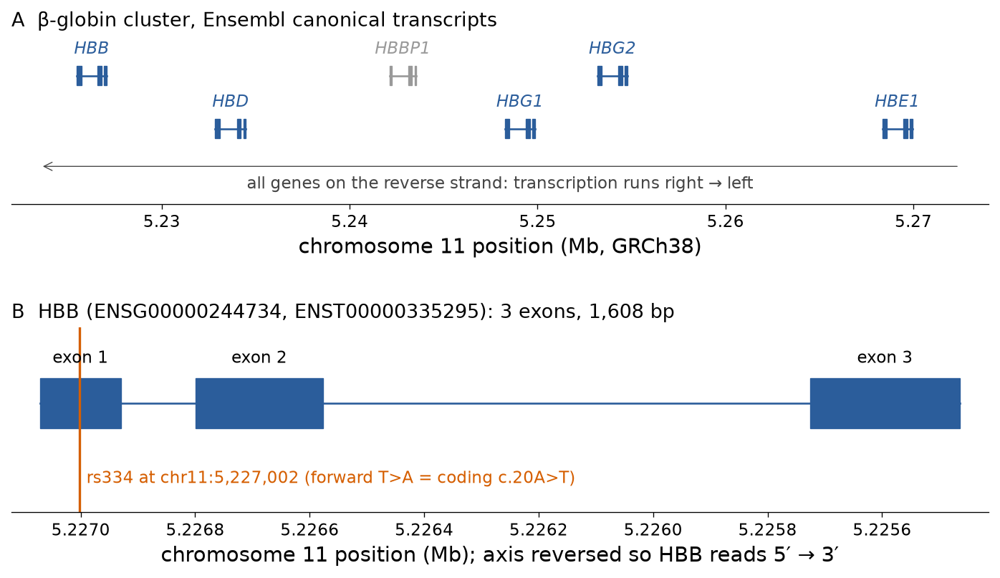
Try it yourself: query Ensembl programmatically
Every page of a genome browser is backed by a database that can be queried directly. The Ensembl REST API returns JSON for simple URLs; here three calls retrieve the assembly name and length, the location of HBB, and the mapping of rs334. You can paste the same URLs (for example https://rest.ensembl.org/lookup/symbol/homo_sapiens/HBB?content-type=application/json) into a web browser.
import requests
server = "https://rest.ensembl.org"
hdr = {"Content-Type": "application/json"}
asm = requests.get(server + "/info/assembly/homo_sapiens", headers=hdr, timeout=60).json()
print(asm["assembly_name"], asm["assembly_accession"], "golden path length:", f"{asm['golden_path']:,}")
gene = requests.get(server + "/lookup/symbol/homo_sapiens/HBB", headers=hdr, timeout=60).json()
print(gene["id"], gene["display_name"], f"chr{gene['seq_region_name']}:{gene['start']:,}-{gene['end']:,}", "strand", gene["strand"])
var = requests.get(server + "/variation/human/rs334", headers=hdr, timeout=60).json()
m = var["mappings"][0]
print(var["name"], m["location"], m["allele_string"], var["most_severe_consequence"])Key ideas: Section 2.2
- Clone-by-clone sequencing maps large clones first; whole-genome shotgun sequences random fragments and relies on computation.
- OLC assemblers compare reads; de Bruijn assemblers decompose reads into k-mers and follow paths in a graph of (k−1)-mers.
- Repeats longer than the read (or k-mer) length break assemblies; long reads span them.
- N50 is the contig length at which half of the assembly is contained in contigs at least that long; it measures contiguity, not correctness.
- The HGP produced a draft in 2001 and finished euchromatin in 2004 (about 20,000–25,000 protein-coding genes); T2T-CHM13 completed a human genome in 2022; the 2023 pangenome represents 47 diploid individuals.
- Genome browsers display annotation tracks on coordinates; Ensembl, UCSC and NCBI GDV show public annotation, IGV shows your own reads.
Bridge
The RefSeq records displayed in the browsers (NM_000518, NG_059281, NC_000011) and the structure of GenBank and Ensembl entries are the subject of Unit 3. Mapping reads to the reference is an alignment problem (Unit 4A). The duplicated globin genes seen in Figure 12 are the raw material for the multiple alignment and phylogeny of globins in Unit 4B.
Section 2.3Regulations and ethical issues in sequencing
Curriculum item 2.3: «Normativas y temas éticos asociados» — Associated regulations and ethical issues.
Unit 1 (Section 1.5) introduced the general principles of research ethics — respect for persons, beneficence, justice — and the institutions that apply them, such as research ethics committees. This section does not repeat that material. It concentrates on the questions that are specific to sequence data: a genome is information that identifies a person, says something about their relatives, can be copied without limit, and may reveal facts that nobody was looking for.
2.3.1 What makes genomic data special
Four properties distinguish genomic data from most other medical data. (1) Identifiability: a genome, or even a few dozen common variants, is unique to one person (except identical twins), so "anonymising" a genome by removing the name does not make it anonymous. (2) Familial character: a person shares about half of their variants with each parent, child and sibling, so a decision by one person to publish their genome discloses information about relatives who did not consent. (3) Permanence and open-ended meaning: the sequence does not change, but its interpretation does; a variant of unknown significance today may be classified as pathogenic in five years. (4) Ease of copying and linking: once a genome file is shared it can be copied indefinitely and combined with other databases. These properties underlie each of the topics below.
2.3.2 Consent for genomic research and clinical sequencing
Informed consent for sequencing has to address more than the immediate procedure. A consent form for a genome study normally explains what will be sequenced (a gene panel, the exome, the whole genome), where the data and samples will be stored and for how long, who may access them, whether they may be used for future studies not yet defined, whether participants will be told about findings relevant to their health, and the residual risk of re-identification. Three consent models are used: specific consent for one study; broad consent for a category of future research approved by an ethics committee; and dynamic consent, in which participants use an online platform to adjust their choices over time. Broad consent is the norm for biobanks, but it is defensible only together with strong governance (ethics review of each new use and controlled access to data).
In Chile, Ley 20.120 (2006) on scientific research in human beings, their genome and the prohibition of human cloning states that the genetic identity of a person may be investigated or determined only with their prior informed consent, or that of the person legally authorised to give it, and requires prior, express, free and informed consent for all biomedical research on human beings.[W2] The law also prohibits arbitrary discrimination based on a person's genetic heritage and states that the results of genetic tests may not be used for that purpose; it declares knowledge of the human genome the common heritage of humanity, so that nobody may claim ownership of it, and establishes that the structure of a gene and partial or complete DNA sequences are not patentable, whereas biotechnological processes and products derived from that knowledge may be.[W2]
2.3.3 Data sharing: from the Bermuda Principles to controlled access
Genomics has an unusually strong tradition of open data, established by the Human Genome Project. At a strategy meeting in Bermuda in February 1996 the leaders of the major sequencing centres agreed that human genomic sequence assemblies of 1–2 kb or longer should be released to public databases within 24 hours, and that finished sequence should be submitted immediately. The US NHGRI turned this into a funding policy in 1997, requiring its large-scale sequencing grantees to release assemblies of 2 kb or more within 24 hours of their generation.[W3] The purpose was to maximise the benefit to science and to prevent the patenting of raw sequence.
In January 2003 a meeting organised by the Wellcome Trust in Fort Lauderdale reaffirmed the Bermuda Principles and extended them to "community resource projects" — large datasets produced specifically as resources for the whole community, such as genomes of other organisms, the HapMap project or large expression datasets. It defined a system of tripartite responsibility: producers release data rapidly before publication; users respect the producers' right to publish the first global analyses; funders make rapid release a condition of support.[W4]
Open release works for reference genomes and model organisms, but not for genomes linked to identifiable participants and their medical information. For human data the standard today is controlled access. Data are deposited in a repository such as the NCBI database of Genotypes and Phenotypes (dbGaP)[48] or the European Genome-phenome Archive (EGA)[49]; summary information (what study, how many samples, which assays) is public, but individual-level data are released only to researchers whose application is approved by a data access committee and who sign a data use agreement prohibiting re-identification and limiting use to the approved purpose. Aggregate statistics, such as allele frequencies in gnomAD, are usually public.
Misconception: "removing the name makes genomic data anonymous"
Gymrek and colleagues showed in 2013 that the surnames of anonymous male research participants could be inferred by matching short tandem repeats on their Y chromosome with recreational genetic-genealogy databases, and that combining the surname with age and state was enough to identify individuals.[50] Erlich and colleagues analysed genomic data from 1.28 million consumer-genomics customers in 2018 and projected that about 60 % of searches for individuals of European descent would find a third cousin or closer relative, enough for identification with demographic information, and that the technique could soon implicate nearly any US individual of European descent.[51] De-identification lowers the risk; it does not remove it.
2.3.4 The HeLa genome: consent, family and governance
HeLa cells, the first human cell line that could be grown indefinitely, were derived in 1951 from a cervical tumour of Henrietta Lacks, an African-American woman treated at Johns Hopkins Hospital, without her knowledge or consent — standard practice at the time. In March 2013 a group in Germany published the genome of a HeLa line and deposited the data publicly.[52] Members of the Lacks family objected that the genome revealed information about them, and the data were withdrawn from public access. A second study, a haplotype-resolved HeLa genome, was published in August 2013 under a new arrangement.[53] After meetings with the family, the US National Institutes of Health agreed that HeLa genome data would be deposited in dbGaP under controlled access, that a committee including two family members would review applications, and that publications would acknowledge Henrietta Lacks and her family.[54] The case illustrates three points: genomic data are familial, consent norms change over time, and governance (who decides access) can repair part of what consent did not provide.
2.3.5 Direct-to-consumer genetic testing
Direct-to-consumer (DTC) companies sell genotyping or sequencing tests to the public, usually from a saliva sample sent by post, and return reports on ancestry, traits and health risks without a physician. Their benefits (access, engagement, large research cohorts built with participants' consent) come with risks: limited clinical validity of many risk estimates, misunderstanding of probabilistic results, lack of genetic counselling, unexpected discoveries about parentage, and the commercial use and long-term custody of genetic data. In November 2013 the US Food and Drug Administration ordered the company 23andMe to stop marketing its health reports, which the agency considered medical devices lacking evidence of analytical and clinical validity;[55] the company later obtained authorisation for specific carrier-status and genetic-risk reports. The question of data custody became concrete in 2025, when 23andMe filed for bankruptcy and a US bankruptcy court approved the sale of its assets, including the genetic data and samples of millions of customers, to a non-profit research institute founded by the company's co-founder; several US states objected that genetic data should not be transferred without renewed consent.[W5]
2.3.6 Newborn screening and genomic newborn testing
Newborn screening is the oldest population-wide genetic public-health programme. In 1963 Robert Guthrie described a simple bacterial-inhibition assay that measured phenylalanine in a drop of blood dried on filter paper, allowing every newborn to be tested for phenylketonuria (PKU), a disorder whose intellectual disability can be prevented by diet if treatment starts early.[56] The "Guthrie card" (dried blood spot) is still used. Screening is justified when the condition is serious, treatable, detectable before symptoms, and when a confirmatory diagnosis and treatment are available — criteria that also apply to sickle-cell disease, for which early diagnosis allows penicillin prophylaxis, vaccination and parental education that reduce childhood mortality.[57]
In Chile the Ministry of Health has run a national programme for PKU and congenital hypothyroidism since 1992.[W6] An expanded programme (Programa de Pesquisa Neonatal Ampliada) is being implemented in the public health network, increasing the number of conditions screened from 2 to 26, most of them detected by tandem mass spectrometry of the dried blood spot.[W7][W8] Haemoglobinopathies are not among the conditions listed in these Chilean sources, consistent with the low prevalence of the HbS allele in the Chilean population; countries with high prevalence screen all newborns for sickle-cell disease, by haemoglobin electrophoresis, high-performance liquid chromatography or, more recently, mass spectrometry (Section 2.5 and the running case).[58]
Newborn screening raises its own ethical questions: whether parental consent should be explicit or presumed; how long the dried blood spots may be stored and whether they may be used for research or forensic identification; and, with the arrival of genome sequencing, whether newborns should be sequenced to screen for hundreds of conditions at once, many of them untreatable or of adult onset.
2.3.7 Incidental and secondary findings
A clinical exome or genome sequenced to explain one problem (for example a child's developmental delay) contains information about thousands of other genes. An incidental finding is a result unrelated to the reason for testing; when the laboratory deliberately looks for a defined set of such results, they are called secondary findings. In 2013 the American College of Medical Genetics and Genomics (ACMG) recommended that laboratories analyse a minimum list of genes in which pathogenic variants cause serious, actionable conditions (such as hereditary breast and ovarian cancer, Lynch syndrome, familial hypercholesterolaemia and some cardiomyopathies) and report them,[59] later adding the right of patients to opt out. The list is updated regularly; version 3.2 was published in 2023.[60] The policy balances a duty to warn against the right not to know, the cost of confirming and counselling, and the uncertainty of penetrance in people without a family history.
2.3.8 Forensic DNA databases
Forensic identification does not use whole genomes. It uses a set of highly polymorphic short tandem repeats (STRs) whose combination is practically unique to each person, chosen because they carry no direct information about health or traits. Most countries maintain national databases of STR profiles from convicted (and in some countries arrested) persons and from crime-scene evidence. In Chile, Ley 19.970 (published in October 2004, in force since the publication of its regulation in November 2008) created the Sistema Nacional de Registros de ADN.[W9] The law defines the huella genética as an alphanumeric record based exclusively on genetic information that is polymorphic in the population, has no direct association with gene expression and provides only identifying information. The system is reserved: it may be consulted directly only by the Public Prosecutor's Office (Ministerio Público) and the courts, with police and defence lawyers requiring authorisation, and it may never be a basis for discrimination or stigmatisation.[W9] The system is administered by the Civil Registry and Identification Service, the Medical Legal Service enters most profiles, and it contains separate registries for convicted persons, persons under investigation, evidence from unidentified persons, victims, and missing persons and their relatives.[W9]
Two developments challenge the traditional limits. Familial searching looks for partial matches that suggest a relative of the unknown person is in the database. Investigative genetic genealogy uploads genome-wide genotypes from crime-scene samples to consumer genealogy databases to find distant relatives, as anticipated by the calculations of Erlich and colleagues;[51] it extends forensic searches to millions of people who never consented to that use.
2.3.9 The Chilean framework for genetic and personal data
Three laws form the core of the Chilean framework relevant to sequencing.
| Law | Subject | Provisions relevant to genomics |
|---|---|---|
| Ley 20.120 (2006) and its regulation (Decreto 114, 2010) | Scientific research in human beings, their genome, and prohibition of human cloning | Consent for research and for determining genetic identity; prohibition of arbitrary genetic discrimination; human genome as common heritage; DNA sequences not patentable; ethics review of research.[W2] |
| Ley 19.970 (2004; in force 2008) | National DNA Registry System | Forensic STR profiles with identifying information only; restricted access; non-discrimination; five registries.[W9] |
| Ley 21.719 (published 13 December 2024) | Protection and processing of personal data; creation of the Personal Data Protection Agency | Substantially rewrites Ley 19.628 (renamed "on the protection of personal data"); principles of lawfulness and purpose limitation; rights of access, rectification, erasure, objection, portability and blocking; special protection for sensitive data, which include health, biometric and genetic data; an independent supervisory agency with sanctioning powers. Scheduled to enter into force on 1 December 2026.[W10] |
The entry into force of Ley 21.719 is relevant for anyone handling genetic data in Chile, including university laboratories. As of October 2026 a government bill that would postpone the entry into force to 1 December 2027 was under discussion in the Senate; the date in force remained 1 December 2026.[W11] Students should check the current status before relying on either date. Sequencing projects involving patients must, in addition, follow the rules on informed consent and ethics committees covered in Unit 1 and the patient-rights legislation.
Clinical connection: what a carrier result means for a family
Suppose sequencing of a child for an unrelated reason reveals that the child carries one copy of HbS. This is not a diagnosis of disease, but it means that at least one parent is a carrier, that siblings may be carriers, and that future pregnancies of a carrier couple have a one-in-four chance of an affected child. Who should be told, by whom, and with what counselling is exactly the kind of question that consent forms and secondary-finding policies must answer in advance.
Key ideas: Section 2.3
- Genomic data are identifying, familial, permanent and easily copied; de-identification does not guarantee anonymity.
- Bermuda (1996) and Fort Lauderdale (2003) established rapid open release for reference data; human individual-level data are shared through controlled-access archives such as dbGaP and EGA.
- The HeLa case shows the familial nature of genomes and the role of governance when consent was absent.
- Newborn screening, DTC testing, secondary findings and forensic databases each balance benefit against autonomy and privacy in a different way.
- In Chile: Ley 20.120 (genome research and consent), Ley 19.970 (forensic DNA registry), Ley 21.719 (personal data, with genetic data as sensitive data; scheduled to enter into force on 1 December 2026).
Section 2.4Gene expression analysis: ESTs, DNA chips and transcriptomics
Curriculum item 2.4: «Análisis de expresión génica. Secuenciación de EST. Chips de ADN. Transcriptómica» — Gene expression analysis. EST sequencing. DNA chips. Transcriptomics.
Every nucleated cell of a person carries essentially the same genome, yet a red-cell precursor makes haemoglobin, a hepatocyte makes albumin and a smooth-muscle cell makes contractile proteins. The difference lies in which genes are expressed, that is, transcribed into RNA (and, for protein-coding genes, translated). Measuring expression answers questions such as: which genes respond to a drug, which distinguish a tumour from normal tissue, which mark a cell type. The methods evolved from measuring one gene at a time to measuring all of them — the transcriptome, the complete set of RNA molecules in a sample at a given moment.
2.4.1 Measuring one gene: Northern blotting and quantitative PCR
Northern blotting
In 1977 Alwine, Kemp and Stark described a method to detect specific RNAs after separating them by size: RNA is run on a denaturing agarose gel, transferred ("blotted") to a membrane and hybridised with a labelled probe complementary to the RNA of interest.[61] By analogy with Southern's DNA blot the method was named the Northern blot. It reports both the amount and the size of the transcript (revealing alternative isoforms or degradation), but it needs microgram amounts of RNA and is slow and only semi-quantitative.
Reverse-transcription quantitative PCR (RT-qPCR)
Real-time or quantitative PCR (qPCR), introduced by Higuchi and colleagues in 1993, monitors the amount of PCR product in every cycle through a fluorescent signal (a DNA-binding dye such as SYBR Green, or a sequence-specific probe).[62] For RNA, the template is first converted to cDNA by reverse transcription. During the exponential phase the amount of product approximately doubles each cycle, so the cycle at which fluorescence crosses a fixed threshold, the threshold cycle (Ct, also called Cq), is inversely related to the logarithm of the starting amount: a sample with twice as much template reaches the threshold one cycle earlier.
The most common way to compare samples is the comparative Ct (2−ΔΔCt) method of Livak and Schmittgen.[63] The Ct of the target gene is first normalised to a reference gene whose expression is assumed not to change (giving ΔCt), and the treated sample is then compared with the control (giving ΔΔCt):
Worked example (hypothetical Ct values). In control cells the target gene crosses the threshold at Ct 26.0 and the reference gene at 18.0, so ΔCt(control) = 8.0. After treatment the target crosses at 23.6 and the reference at 18.2, so ΔCt(treated) = 5.4. Then ΔΔCt = 5.4 − 8.0 = −2.6 and the fold change is 22.6 ≈ 6.06: the target is about six times more abundant, relative to the reference gene, in treated cells (Figure 13).
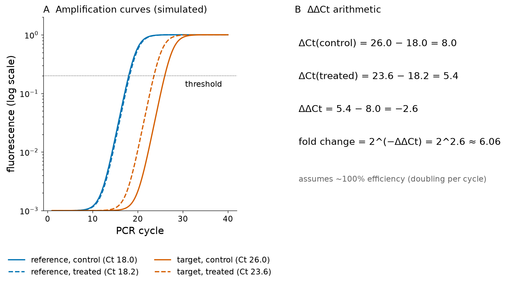
Pitfalls of RT-qPCR
- The 2−ΔΔCt formula is valid only if both assays have efficiencies close to 100 % and similar to each other; otherwise efficiency-corrected models are needed.
- A reference ("housekeeping") gene must be shown to be stable under the experimental conditions; using several reference genes is recommended.
- The MIQE guidelines specify the minimum information (RNA quality, primer sequences, efficiencies, controls without reverse transcriptase) that a qPCR study must report.[64]
RT-qPCR remains the most sensitive and precise method for a handful of genes and is the standard for validating results of genome-wide experiments. Measuring thousands of genes requires different technology.
2.4.2 Expressed sequence tags (ESTs)
The first genome-scale view of expression came from sequencing. In 1991 Adams, Venter and colleagues proposed to sequence randomly chosen clones from cDNA libraries only once, from one end, and to treat each short (a few hundred bases), error-prone read as a "tag" identifying an expressed gene: an expressed sequence tag (EST).[65] A single pass costs a fraction of a finished sequence, and because the cDNA library reflects the mRNA population of the tissue from which it was made, the ESTs simultaneously (i) discovered new genes long before the genome was sequenced, (ii) indicated in which tissues each gene is expressed, and (iii) gave a crude measure of expression level: highly expressed genes are represented by more ESTs.
ESTs were collected in dbEST, a division of GenBank created at NCBI in 1993.[66] A query of the NCBI EST database for Homo sapiens made on 18 October 2026 returned 29,885,237 records. Because many ESTs derive from the same gene, NCBI grouped overlapping ESTs and mRNAs into gene-oriented clusters in the UniGene database, which served for two decades as a catalogue of expressed genes. With complete genomes and reference transcript collections (RefSeq, GENCODE) available, the need for UniGene declined, and NCBI retired its web interface in July 2019; the final builds remain downloadable.[W12]
ESTs today
ESTs are historically important and are still found in database records and in older papers, but they are no longer a method of choice for measuring expression. Their counts are biased by library construction and normalisation, they are mostly 3′ or 5′ fragments, and they have high error rates. RNA-seq (Section 2.4.5) has replaced them.
2.4.3 Serial analysis of gene expression (SAGE)
SAGE, introduced by Velculescu, Kinzler, Vogelstein and colleagues in 1995, made counting more efficient.[67] Instead of sequencing a few hundred bases per cDNA, SAGE cuts a short tag (originally 9–10 bases) from a defined position near the 3′ end of each transcript, ligates many tags head to tail into long concatemers, clones and sequences them. One Sanger read thus counts dozens of transcripts. The number of times a tag is observed is proportional to the abundance of its mRNA, and tags are assigned to genes by matching them to known sequences. SAGE introduced the idea, central to RNA-seq, that expression can be measured by counting sequenced molecules rather than by hybridisation intensity, and it did not require prior knowledge of which genes exist. Its limitations were the ambiguity of very short tags and the laborious cloning.
2.4.4 DNA microarrays ("DNA chips")
A DNA microarray is a solid surface on which thousands to millions of known DNA sequences (probes) are fixed at defined positions. Labelled cDNA or cRNA from a sample is hybridised to the array; each target molecule binds to the spot that carries its complementary probe, and the fluorescence intensity of each spot reflects the amount of the corresponding transcript. From the late 1990s until about 2010, microarrays were the principal tool of transcriptomics.
Spotted two-colour arrays
Schena, Brown and colleagues reported in 1995 the first cDNA microarray, on which PCR-amplified cDNAs were printed by a robot on glass slides.[68] In the two-colour design, cDNA from two samples (for example tumour and normal tissue) is labelled with two different dyes, Cy5 (red, R) and Cy3 (green, G), mixed and hybridised to the same array. Each spot is scanned at both wavelengths, and the result is expressed as a log ratio M = log2(R/G), where M = 1 means two-fold higher in the red sample and M = −1 two-fold lower. Because the two samples compete for the same spot, differences in spot size or DNA amount cancel out. The log scale makes up- and down-regulation symmetric.
In situ synthesised oligonucleotide arrays (Affymetrix)
Lockhart and colleagues described in 1996 high-density arrays on which short oligonucleotides are synthesised directly on the chip by photolithography, the technique used to make computer chips.[69] Each gene is represented by a set of 25-mer probes, originally paired with "mismatch" probes carrying a single central substitution to estimate non-specific hybridisation. Only one sample is hybridised per array (one colour), so comparisons are made between arrays, which requires careful normalisation.
Normalisation
Raw intensities contain systematic technical variation: different labelling efficiencies of the two dyes, different amounts of RNA, scanner settings, spatial effects across the slide. Normalisation removes these effects so that remaining differences reflect biology. The MA plot (Figure 14) is the standard diagnostic for two-colour arrays: it plots M against the average log intensity A = ½·log2(R·G). If most genes do not change, the cloud should be centred on M = 0 at all intensities; a curved cloud indicates intensity-dependent dye bias, which is removed by subtracting a local regression (loess) fit.[70] For one-colour arrays, methods such as RMA combine background correction, quantile normalisation (forcing all arrays to have the same intensity distribution) and robust summarisation of the probe set.[71]
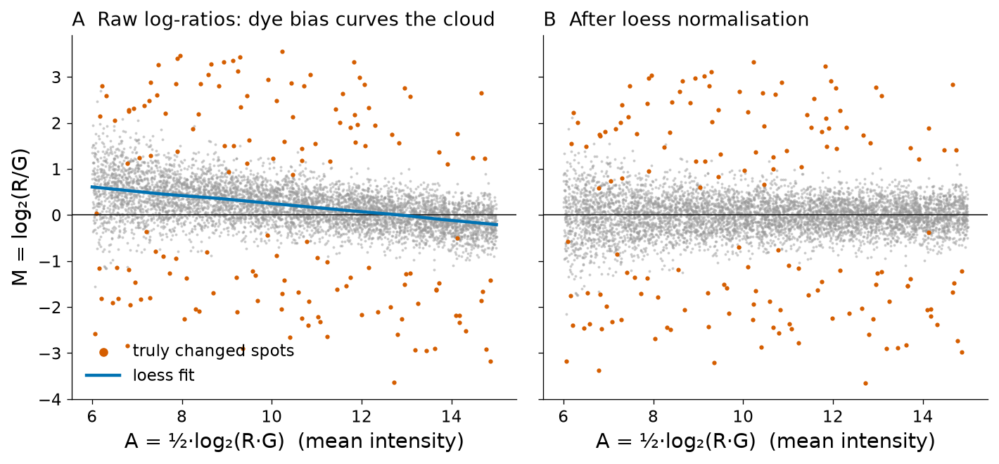
Microarrays are inexpensive, robust and well standardised, and they are still used for genotyping arrays, methylation arrays and some clinical tests. For expression they have two intrinsic limitations: they can measure only transcripts for which probes were designed, and hybridisation signals saturate at high abundance and are lost in background at low abundance, limiting the dynamic range. A public archive was essential for this flood of data: the NCBI Gene Expression Omnibus (GEO) stores expression datasets with standardised metadata.[72] On 18 October 2026 GEO contained 298,743 series; 69,959 were labelled "expression profiling by array" and 147,173 "expression profiling by high throughput sequencing", a measure of how sequencing has overtaken arrays.
2.4.5 RNA-seq: transcriptomics by sequencing
RNA-seq applies NGS to cDNA libraries (Section 2.1.8) and measures expression by counting reads. Mortazavi and colleagues used it in 2008 to quantify the mouse transcriptome,[73] and within a few years it had become the standard method.[23][24] Compared with arrays it measures any transcript, including unknown ones; it has a dynamic range limited only by sequencing depth; it reveals splice junctions, alternative isoforms, fusion transcripts, allele-specific expression and RNA editing; and it is directly comparable between laboratories because it counts molecules rather than measuring light intensity.
From reads to counts
A typical bulk RNA-seq analysis has four steps. (1) Quality control of the FASTQ files (Section 2.1.9) and trimming of adapters and low-quality ends. (2) Mapping of the reads to the reference genome with a splice-aware aligner, which allows a read to span an intron because mature mRNAs lack introns; alternatively, reads are assigned directly to transcripts by fast "pseudo-alignment" methods. (3) Counting: for each gene, the number of reads (or read pairs) whose alignment overlaps its exons is recorded, using an annotation file of gene models; reads that map to several genes are discarded or apportioned. (4) Normalisation and statistical testing, described next. The result of step 3 is a count matrix with one row per gene and one column per sample.
Normalisation units: CPM, RPKM/FPKM and TPM
Raw counts depend on two technical factors besides expression: the sequencing depth of the library (a library with twice as many reads gives about twice as many counts for every gene) and the length of the gene (a longer transcript produces more fragments at the same molar abundance). Three common units correct for them:
CPM corrects only for depth and is appropriate for comparing the same gene across samples. RPKM, introduced by Mortazavi and colleagues,[73] also corrects for length, but its values do not sum to the same total in different samples. TPM first divides by length and then rescales so that every sample sums to one million; Wagner, Kin and Lynch showed that this makes TPM interpretable as a relative molar concentration and consistent across samples, which RPKM is not.[74]
Try it yourself: CPM, RPKM and TPM by hand, and the ΔΔCt example
Three genes of different lengths are counted in two samples. Gene C has exactly the same count (200) in both samples, yet its CPM halves and its TPM falls from 400,000 to 235,294 in S2, because genes A and B take a larger share of the library: proportions are relative, a composition effect. TPM always sums to 106; RPKM does not.
# three genes, two samples: raw counts and gene lengths (bp)
genes = ["geneA", "geneB", "geneC"]
length = [2000, 4000, 1000]
counts = {"S1": [400, 400, 200], "S2": [800, 1000, 200]}
for s, c in counts.items():
N = sum(c)
cpm = [x / N * 1e6 for x in c]
rpkm = [x / (l / 1e3) / (N / 1e6) for x, l in zip(c, length)]
rpk = [x / (l / 1e3) for x, l in zip(c, length)]
tpm = [r / sum(rpk) * 1e6 for r in rpk]
print(s, "CPM", [round(v) for v in cpm], "RPKM", [round(v) for v in rpkm], "TPM", [round(v) for v in tpm], "sum TPM", round(sum(tpm)))
# ddCt
ct = dict(ref_ctrl=18.0, tgt_ctrl=26.0, ref_trt=18.2, tgt_trt=23.6)
ddct = (ct["tgt_trt"] - ct["ref_trt"]) - (ct["tgt_ctrl"] - ct["ref_ctrl"])
print(f"ddCt = {ddct:.1f}; fold change = {2 ** -ddct:.2f}")A real example: in the airway experiment analysed below, the glucocorticoid-responsive gene FKBP5 received 265 reads among 20,992,777 assigned reads in untreated cells of donor line N61311 (12.6 CPM), and 4,688 reads among 19,198,197 in the same line after dexamethasone treatment (244.2 CPM). The TPM values computed by the NCBI GEO pipeline for the same two samples are 3.4 and 64.5. None of these units is suitable on its own for formal differential-expression testing, because they ignore composition effects (a few very highly expressed genes changing can shift all other proportions) and they discard the count nature of the data that statistical models need.
2.4.6 Statistics of differential expression with real data
The question "is this gene differentially expressed between conditions?" must be answered against the background of biological variability among replicates. To illustrate the full analysis with real data we use the experiment of Himes and colleagues (GEO series GSE52778), who treated primary airway smooth-muscle cells from four human donors with the glucocorticoid dexamethasone, a drug used to treat asthma, and sequenced their RNA.[75] We use the eight samples of the untreated and dexamethasone conditions (the series also includes albuterol treatments) and the raw count matrix computed by NCBI's uniform GEO RNA-seq pipeline on GRCh38.p13 (39,376 genes). Library sizes ranged from 19.2 to 39.1 million assigned reads.
Why counts are overdispersed: the negative binomial model
If reads were sampled independently from a fixed pool of molecules, the count of a gene in replicate libraries would follow a Poisson distribution, whose variance equals its mean. Real replicates are different cultures, animals or patients, whose true expression levels differ; the counts are therefore more variable than Poisson, just as genome coverage was in Section 2.1.11. RNA-seq methods such as edgeR[76] and DESeq2[77] model counts with the negative binomial distribution, whose variance is
Figure 15A shows the mean and variance of normalised counts across the four untreated replicates of every gene. At low counts the points follow the Poisson line, because sampling noise dominates; at high counts the variance grows with the square of the mean, as the negative binomial predicts. The median dispersion estimated for this dataset was α = 0.024, i.e. a biological coefficient of variation of about 15 %.
The analysis
The analysis was run with PyDESeq2 0.5.4, a Python implementation of the DESeq2 method.[78][77] The steps were: (1) remove genes with fewer than 10 reads in total over the eight samples, leaving 21,833; (2) estimate a size factor for each library by the median-of-ratios method (each gene's count is divided by its geometric mean across samples, and the median of these ratios is the size factor); the values ranged from 0.695 to 1.294; (3) estimate a dispersion for each gene and shrink it towards a fitted trend across genes, which stabilises estimates from only four replicates; (4) fit a negative binomial generalised linear model with the design ~ cell + dex, which compares treated and untreated cells within each donor line, removing donor-to-donor differences; (5) test the dexamethasone coefficient (the log2 fold change) with a Wald test.
Multiple testing and the Benjamini–Hochberg procedure
A p-value of 0.05 means that, if a gene were not affected by treatment, a difference at least as large would be seen by chance 5 % of the time. Testing about 20,000 genes at this threshold would produce about a thousand false positives even if no gene responded. The family-wise error rate can be controlled with the Bonferroni correction (multiply each p-value by the number of tests), but this is very conservative for genome-wide studies. Benjamini and Hochberg proposed in 1995 to control instead the false discovery rate (FDR), the expected proportion of false positives among the genes declared significant.[79] Their procedure is simple: sort the m p-values in increasing order, p(1) ≤ … ≤ p(m); the adjusted value for rank i is the smallest value of p(j)·m/j over all j ≥ i (capped at 1); declare significant all genes with adjusted p (often called padj or q-value) below the chosen FDR, for example 0.05.
Try it yourself: Benjamini–Hochberg in ten lines
Ten invented p-values are adjusted with the BH procedure and compared with Bonferroni. At an FDR of 5 %, eight hypotheses are rejected; at a family-wise error rate of 5 % (Bonferroni), only three.
p = [0.0001, 0.0004, 0.0019, 0.0095, 0.020, 0.028, 0.030, 0.034, 0.046, 0.32]
m = len(p)
order = sorted(range(m), key=lambda i: p[i])
adj = [0.0] * m; running = 1.0
for rank in range(m, 0, -1): # step down from the largest p-value
i = order[rank - 1]
running = min(running, p[i] * m / rank)
adj[i] = running
for pi, qi in zip(p, adj): print(f"p = {pi:.4f} BH-adjusted = {qi:.4f} {'significant' if qi < 0.05 else ''}")
print("Bonferroni-significant:", sum(pi * m < 0.05 for pi in p), " BH-significant:", sum(q < 0.05 for q in adj))DESeq2 applies BH after independent filtering: genes with very low mean counts, which have almost no power to be detected, are excluded from the adjustment, reducing the multiple-testing burden. In this analysis 18,446 genes passed the filter. Implementing BH independently on their p-values reproduced the PyDESeq2 adjusted values exactly (maximum difference 2.2 × 10−16). For comparison, 6,177 genes had an unadjusted p < 0.05.
Results and interpretation
At an FDR of 5 %, 4,536 genes were differentially expressed: 2,489 higher and 2,047 lower after dexamethasone. The MA plot (Figure 15B) shows that significant genes at low counts need large fold changes, while at high counts small changes are detectable — the statistical power depends on the count. The volcano plot (Figure 15C) combines effect size (x) and significance (y). The strongest responses include classic glucocorticoid target genes: DUSP1 (log2 fold change 2.96, i.e. 7.8-fold), KLF15 (4.42), PER1 (3.23), TSC22D3 (3.21; it encodes the glucocorticoid-induced leucine zipper GILZ), FKBP5 (4.04, 16.4-fold) and ZBTB16 (7.44, about 170-fold), and the downregulated adhesion molecule VCAM1 (−3.65). CRISPLD2, the gene highlighted by Himes and colleagues as a glucocorticoid-responsive gene that modulates cytokine function in airway smooth muscle,[75] was induced 6.2-fold (log2 fold change 2.63, padj 2.3 × 10−60).
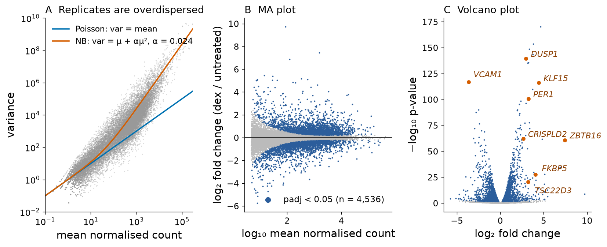
How not to read a differential-expression table
- "Not significant" is not "not changed": with four replicates, modest changes in weakly expressed genes cannot be detected.
- A tiny p-value does not mean a large effect; always look at the fold change and the expression level.
- Fold changes of genes with very few reads are unreliable; DESeq2 offers shrunken estimates for ranking genes.
- Expression is not protein abundance or activity; a change in mRNA must be confirmed at the protein or functional level before biological conclusions are drawn.
Clinical connection: expression signatures in medicine
Expression profiling is used clinically in multigene tests that estimate recurrence risk in breast cancer and guide decisions on chemotherapy, in the classification of leukaemias and lymphomas, and in the detection of fusion transcripts that are targets of specific drugs. In the running case, expression explains the phenotype of the disease: HBB is one of the most strongly expressed genes in red-cell precursors but is essentially silent in airway smooth muscle — in the GSE52778 count matrix it received between 0 and 2 reads per sample and was removed by the low-count filter.
2.4.7 Single-cell and spatial transcriptomics
Bulk RNA-seq measures the average expression of all cells in a sample. Tissues, however, are mixtures of cell types, and a change in the average can mean that every cell changed or that the proportion of cell types changed. Single-cell RNA-seq (scRNA-seq) measures the transcriptome of individual cells. Tang and colleagues sequenced the mRNA of a single mouse blastomere in 2009;[80] microfluidic droplet and combinatorial-barcoding methods now profile tens of thousands to millions of cells per experiment, a growth that Svensson, Vento-Tormo and Teichmann described as exponential.[81] In droplet methods each cell is captured in an oil droplet with a bead carrying oligonucleotides that contain a cell barcode, shared by all molecules from that cell, and a unique molecular identifier (UMI), different for each captured mRNA molecule, so that PCR duplicates can be collapsed and molecules counted. The data are sparse (most genes have zero counts in any given cell), and analysis relies on dimensionality reduction and clustering to identify cell types and states — methods taught in the course on artificial intelligence.
Spatial transcriptomics restores the information about where cells are. In the approach of Ståhl and colleagues (2016), a tissue section is placed on a slide covered with spots of barcoded capture oligonucleotides; mRNA diffuses onto the spots, and the barcode in each sequenced read gives the position of the spot.[82] Imaging-based methods, which count individual RNA molecules by sequential fluorescence hybridisation in the tissue, reach subcellular resolution for hundreds to thousands of genes. Spatial methods are transforming pathology, developmental biology and neuroscience, because they reveal tissue architecture and cell–cell neighbourhoods.
Key ideas: Section 2.4
- Northern blots and RT-qPCR measure single genes; ΔΔCt gives relative expression assuming 100 % efficiency.
- ESTs (single-pass cDNA reads, dbEST, 1990s) and SAGE (short counted tags) were the first genome-scale expression methods; UniGene was retired in 2019.
- Microarrays measure hybridisation intensity to predefined probes; two-colour arrays report log2 ratios and require normalisation (MA plots, loess, quantile).
- RNA-seq counts reads; CPM corrects for depth, TPM also for length; formal testing uses raw counts with size factors.
- Replicate counts are overdispersed and modelled with the negative binomial; thousands of tests require FDR control (Benjamini–Hochberg).
- Single-cell and spatial methods resolve expression by cell and by position.
Bridge
Expression datasets are archived in GEO and ArrayExpress (Unit 3). Clustering and classification of expression profiles are developed in the course BGM-411 (Artificial Intelligence). The statistical idea of controlling false discoveries reappears in database searching (E-values in BLAST, Unit 4A) and in peptide identification by mass spectrometry (next section).
Section 2.5Protein sequencing and proteomics
Curriculum item 2.5: «Secuenciación de proteínas. Proteómica» — Protein sequencing. Proteomics.
Most protein sequences in databases today were never sequenced as proteins: they were predicted by translating genes or transcripts. Direct measurement of proteins nevertheless remains essential, for three reasons. The genome does not say which proteins are actually made in a given cell and in what amount; proteins are modified after translation (cleavage of the initiator methionine, phosphorylation, glycosylation, proteolytic processing), and these modifications are invisible in the gene; and diagnostic tests often measure the protein itself. This section moves from chemical sequencing of a single protein to proteomics, the large-scale study of all the proteins in a sample.
2.5.1 Historical background and Edman degradation
Protein sequencing predates DNA sequencing by a quarter of a century. Frederick Sanger determined the complete amino acid sequence of insulin in the early 1950s, proving that every protein has a defined sequence (his first Nobel Prize, 1958). In 1950 Pehr Edman described a chemical method that removes and identifies amino acids one at a time from the N-terminus of a peptide.[83]
Edman degradation proceeds in cycles. (1) Under mildly alkaline conditions, phenyl isothiocyanate (PITC) reacts with the free α-amino group of the N-terminal residue. (2) Under anhydrous acid conditions, the modified N-terminal residue cyclises and is cleaved off as an anilinothiazolinone derivative, leaving the rest of the peptide intact with a new free N-terminus. (3) The derivative is converted to a more stable phenylthiohydantoin (PTH) amino acid and identified by chromatography against standards. The shortened peptide enters the next cycle. Automated sequencers ("sequenators") performed the cycles unattended.
Edman degradation reads about 30–50 residues before incomplete reactions accumulate and the signal becomes ambiguous — the same "phasing" problem that limits Illumina reads. It fails completely if the N-terminus is blocked (for example by acetylation, common in eukaryotic proteins), and it requires a purified protein. Longer proteins were sequenced by cleaving them into overlapping fragments with different enzymes or chemicals and reassembling the fragment sequences — a protein version of shotgun assembly. Edman sequencing is still used to confirm the N-terminus of therapeutic proteins, but mass spectrometry has replaced it for almost everything else.
Running case: the first molecular disease
In 1949 Pauling, Itano, Singer and Wells showed by electrophoresis that haemoglobin from patients with sickle-cell anaemia migrated differently from normal haemoglobin, carrying a more positive charge, and that carriers had both forms; they called sickle-cell anaemia a "molecular disease".[84] In 1956–1957 Vernon Ingram digested normal and sickle haemoglobin with trypsin, separated the peptides in two dimensions by electrophoresis and chromatography (a "fingerprint"), found that a single peptide differed, and showed that the difference was the replacement of one glutamic acid by valine.[85][86] This was the first demonstration that an inherited disease is caused by a single amino acid change. The same peptide, VHLTPEEK, is the one we will follow by mass spectrometry below.
2.5.2 Mass spectrometry: ionisation and mass analysers
A mass spectrometer measures the mass-to-charge ratio (m/z) of ions in the gas phase. Every instrument has three parts: an ion source that converts molecules into gas-phase ions, a mass analyser that separates ions by m/z, and a detector. The output is a mass spectrum: intensity against m/z. Masses are expressed in daltons (Da), where 1 Da is one twelfth of the mass of a 12C atom. Two kinds of mass are used: the monoisotopic mass, computed with the most abundant isotope of each element (12C, 1H, 14N, 16O, 32S), which corresponds to the first peak of a peptide's isotope pattern; and the average mass, weighted by natural isotope abundances, which is used for large proteins whose isotope peaks cannot be resolved.
Soft ionisation: MALDI and ESI
Proteins are large, fragile and non-volatile, and for decades they could not be ionised without being destroyed. Two "soft" ionisation methods, developed in the late 1980s, solved the problem and earned John Fenn and Koichi Tanaka a share of the 2002 Nobel Prize in Chemistry.
- Matrix-assisted laser desorption/ionisation (MALDI). The sample is co-crystallised with a large excess of a small UV-absorbing organic acid (the matrix) on a metal plate. A laser pulse vaporises the matrix, which carries the analyte molecules into the gas phase and transfers a proton to them, producing mainly singly charged ions [M+H]+. Karas and Hillenkamp[87] and Tanaka and colleagues[88] reported ionisation of proteins larger than 10 kDa in 1988. MALDI is fast and tolerant of salts, and is used in clinical microbiology to identify bacteria from their protein fingerprints in minutes.
- Electrospray ionisation (ESI). A solution of the analyte is sprayed from a fine needle held at a high voltage; the charged droplets evaporate until the ions are released into the gas phase. Fenn and colleagues showed in 1989 that ESI produces multiply charged ions of large biomolecules, [M+zH]z+, which brings their m/z into the range of ordinary analysers.[89] Because it works from solution, ESI is coupled directly to liquid chromatography (LC-MS), the workhorse arrangement of proteomics: peptides elute from a reversed-phase column over an hour or more and are analysed as they emerge.
Mass analysers
Time-of-flight (TOF) analysers accelerate ions to the same kinetic energy and measure the time they take to fly through a field-free tube; lighter ions arrive first. TOF is naturally paired with pulsed MALDI. Quadrupoles are four parallel rods with oscillating voltages that let only ions of a selected m/z pass, and are used as mass filters. Ion traps hold ions in electric fields and eject them by m/z. Orbitrap and Fourier-transform ion cyclotron resonance (FT-ICR) analysers measure the frequency at which ions oscillate in an electric or magnetic field, which depends on m/z, and achieve very high resolution and mass accuracy (a few parts per million). Modern proteomics instruments are hybrids, for example a quadrupole for selecting ions followed by an Orbitrap or TOF for measuring them.[90]
2.5.3 Tandem mass spectrometry and the b/y fragment ladder
The mass of a peptide alone does not determine its sequence: VHLTPEEK and its permutation KVHLTPEE have the same mass. Tandem mass spectrometry (MS/MS) adds a second stage. The first analyser selects one precursor ion; it is fragmented, most commonly by collisions with an inert gas (collision-induced dissociation, CID, or the related higher-energy collisional dissociation, HCD); and the second analyser records the masses of the fragments.[91] Collisions break peptides predominantly at the amide (peptide) bonds of the backbone. Each cleavage gives two complementary pieces: if the charge stays on the N-terminal piece it is a b ion, and if it stays on the C-terminal piece it is a y ion, following the nomenclature proposed by Roepstorff and Fohlman.[92] A complete series of b ions (b1, b2, …) or y ions forms a ladder whose successive differences are the masses of individual amino acid residues, so the sequence can be read from the spectrum.
For the N-terminal tryptic peptide of mature β-globin, VHLTPEEK, the computed monoisotopic [M+H]+ is 952.5098, and the singly charged fragment ions are b1–b7 = 100.0757, 237.1346, 350.2187, 451.2663, 548.3191, 677.3617, 806.4043 and y1–y7 = 147.1128, 276.1554, 405.1980, 502.2507, 603.2984, 716.3825, 853.4414. The difference b2 − b1 = 137.0589 is the mass of histidine, b3 − b2 = 113.0841 that of leucine (or isoleucine, which has the same mass), and so on. In the sickle peptide VHLTPVEK, b1–b5 are unchanged, whereas b6 and b7 are lower by 29.9742 (647.3875 and 776.4301); conversely y1 and y2 (K and EK) are unchanged and y3 onwards shift. The position at which the two ladders start to differ pinpoints residue 6 as the site of the substitution (Figure 16).
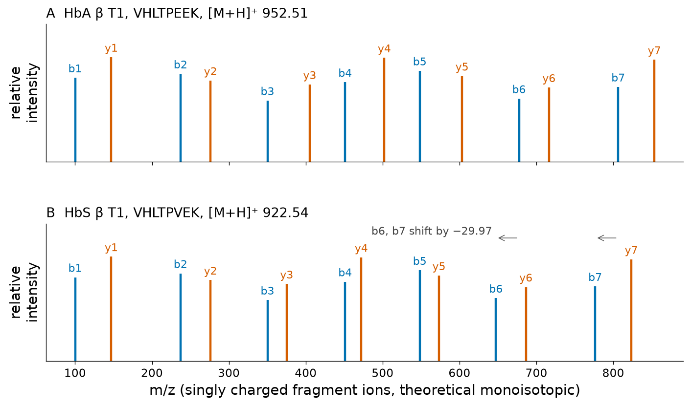
2.5.4 Peptide mass fingerprinting
In 1993 several groups, including Henzel and colleagues at Genentech, showed that a protein can be identified without reading its sequence at all.[93] The protein (for example a spot cut from a gel) is digested with trypsin, which cleaves after lysine (K) and arginine (R) except when the next residue is proline, and the masses of the resulting peptides are measured, usually by MALDI-TOF. This list of masses is a "fingerprint" that is compared with the theoretical tryptic digests of all proteins in a database; the protein whose predicted peptides best match the observed masses is reported. Peptide mass fingerprinting works well for purified proteins from organisms with sequenced genomes, but it fails for mixtures and is sensitive to unexpected modifications.
Try it yourself: in silico tryptic digest of human β-globin and the HbS mass shift
The sequence is the mature chain of UniProt P68871 (HBB_HUMAN, 147 residues including the initiator methionine, which is removed in vivo[94]). The regular expression cuts after K or R not followed by P. Biopython's molecular_weight with monoisotopic=True gives the neutral monoisotopic mass; adding the proton mass gives the [M+H]+ observed in MALDI.
import re
from Bio.SeqUtils import molecular_weight
beta = ("VHLTPEEKSAVTALWGKVNVDEVGGEALGRLLVVYPWTQRFFESFGDLSTPDAVMGNPKVKAHGKKVLGAFSDGLAHLDNLK"
"GTFATLSELHCDKLHVDPENFRLLGNVLVCVLAHHFGKEFTPPVQAAYQKVVAGVANALAHKYH") # mature HBB (no Met)
peptides = re.sub(r"(?<=[KR])(?!P)", " ", beta).split() # trypsin rule
print(len(beta), "residues;", len(peptides), "tryptic peptides; first three:", peptides[:3])
H = 1.007276
for name, pep in (("HbA T1", peptides[0]), ("HbS T1", "VHLTPVEK")):
m = molecular_weight(pep, seq_type="protein", monoisotopic=True)
print(f"{name} {pep}: monoisotopic M = {m:.4f} Da, [M+H]+ = {m + H:.4f}")
hbs = beta[:5] + "V" + beta[6:]
d = molecular_weight(hbs, "protein", monoisotopic=True) - molecular_weight(beta, "protein", monoisotopic=True)
print(f"Glu6Val mass change: {d:.4f} Da")The complete digest of mature β-globin contains 15 peptides. The table lists them with their computed [M+H]+ values; peptides shorter than about five residues (VK, AHGK, K, YH) are usually too small to be useful in a fingerprint.
| Peptide | Residues | Sequence | [M+H]+ |
|---|---|---|---|
| T1 | 1–8 | VHLTPEEK (HbS: VHLTPVEK) | 952.5098 (HbS: 922.5356) |
| T2 | 9–17 | SAVTALWGK | 932.5200 |
| T3 | 18–30 | VNVDEVGGEALGR | 1314.6648 |
| T4 | 31–40 | LLVVYPWTQR | 1274.7256 |
| T5 | 41–59 | FFESFGDLSTPDAVMGNPK | 2058.9477 |
| T6 | 60–61 | VK | 246.1812 |
| T7 | 62–65 | AHGK | 412.2303 |
| T8 | 66 | K | 147.1128 |
| T9 | 67–82 | VLGAFSDGLAHLDNLK | 1669.8908 |
| T10 | 83–95 | GTFATLSELHCDK | 1421.6729 |
| T11 | 96–104 | LHVDPENFR | 1126.5640 |
| T12 | 105–120 | LLGNVLVCVLAHHFGK | 1719.9727 |
| T13 | 121–132 | EFTPPVQAAYQK | 1378.7001 |
| T14 | 133–144 | VVAGVANALAHK | 1149.6738 |
| T15 | 145–146 | YH | 319.1401 |
The cysteines in T10 and T12 are shown unmodified; in practice cysteines are usually reduced and alkylated with iodoacetamide before digestion, which adds 57.0215 Da to each. Note that T1, which carries the sickle mutation, is the very peptide Ingram identified in his fingerprints.
2.5.5 Database searching and de novo sequencing
In a proteomics experiment the instrument records tens of thousands of MS/MS spectra per hour, each from an unknown peptide. Two strategies interpret them. In database searching, introduced by Eng, McCormack and Yates with the program SEQUEST in 1994, every protein in a sequence database is digested in silico; for each spectrum, the candidate peptides whose precursor mass matches within the instrument tolerance are fragmented in silico, and their theoretical b/y ladders are scored against the observed spectrum.[95] The best-scoring candidate is the peptide-spectrum match (PSM). Because many spectra will match some peptide by chance, the error rate is estimated with a target–decoy strategy: the search is repeated against reversed or shuffled ("decoy") sequences, which cannot be correct, and the number of decoy matches above a score threshold estimates the number of false target matches. Results are typically reported at 1 % FDR, the same idea as the Benjamini–Hochberg control in Section 2.4.6.
Database searching can only find peptides that are in the database. De novo sequencing reads the sequence directly from the mass differences in the spectrum, as we did for VHLTPEEK, without a database.[91] It is needed for organisms without sequenced genomes, for antibodies (whose variable regions are generated by somatic recombination and are not in the germline genome), and for unexpected variants. It is harder because real spectra have missing fragments, noise peaks and ions of other types, and because leucine and isoleucine have identical masses.
2.5.6 Two-dimensional gel electrophoresis
Before LC-MS/MS, the principal way to separate thousands of proteins was the two-dimensional gel described by O'Farrell in 1975.[96] In the first dimension, proteins are separated by isoelectric focusing in a pH gradient: each migrates until it reaches the pH at which its net charge is zero, its isoelectric point (pI). In the second dimension, the focused strip is laid on an SDS-polyacrylamide gel, and the proteins, coated with negatively charged detergent, are separated by molecular mass. Stained gels show hundreds to thousands of spots; spots that differ between samples are excised, digested and identified by mass spectrometry.[93] 2-D gels resolve protein isoforms that differ in charge (for example phosphorylated forms), but they under-represent very large, very small, very basic and membrane proteins and are difficult to automate. They are now used mainly for specific questions about isoforms.
The same charge difference that separates spots on a 2-D gel underlies the clinical separation of haemoglobin variants. The β chain of HbS loses one negative charge (Glu → Val). The isoelectric point of mature β-globin computed with Biopython's ProtParam module increases from 6.81 (HbA) to 7.26 (HbS), and the estimated net charge at pH 7.4 changes from −1.22 to −0.22. Such computed values are approximate, because they treat the chain as unfolded and ignore the α chains, the haem and the tetramer, but they predict the direction correctly: in alkaline electrophoresis HbS migrates more slowly towards the anode than HbA.
2.5.7 Bottom-up and top-down proteomics
The workflow described so far — digest all proteins into peptides, separate the peptides by LC, identify them by MS/MS, and infer which proteins were present — is called bottom-up or shotgun proteomics, by analogy with shotgun sequencing.[90] It is sensitive and scalable, and a single LC-MS/MS run can identify several thousand proteins. Its weakness is that it loses the connection between peptides: if a protein carries two modifications, bottom-up proteomics sees them on different peptides and cannot tell whether they occur on the same molecule. Different peptides shared between related proteins also make protein inference ambiguous.
Top-down proteomics measures intact proteins and fragments them inside the mass spectrometer. It characterises complete proteoforms, a term proposed by the Consortium for Top Down Proteomics for all the molecular forms of a protein arising from one gene: allelic variants, alternative splicing and combinations of post-translational modifications.[97] Top-down analysis is more demanding technically, but it is practical for small and abundant proteins such as globins. The intact mass of mature β-globin computed from its sequence is 15,867.01 Da (average) and 15,857.2497 Da (monoisotopic); for the HbS chain the values are 15,837.03 and 15,827.2755 Da. The difference, −29.97 Da, is easily resolved by ESI-MS of a blood sample.
2.5.8 Quantitative proteomics: SILAC, TMT and label-free methods
Identification answers "which proteins?"; quantification answers "how much, and how does it change?". Signal intensity in a mass spectrometer depends strongly on the peptide, so quantification compares the same peptide between samples. Three families of methods are used.
- Metabolic labelling (SILAC). In stable isotope labelling by amino acids in cell culture, introduced by Ong, Mann and colleagues in 2002, one cell population is grown with normal ("light") arginine and lysine and the other with versions containing 13C and 15N ("heavy").[98] After several divisions every protein of the second population is labelled. The samples are mixed before digestion, so every tryptic peptide (which ends in K or R) appears as a pair of peaks separated by a known mass difference, and the ratio of their intensities gives the relative abundance. Because samples are combined early, technical variation is minimal; the method is limited to cells that can be grown in culture.
- Isobaric chemical labelling (TMT, iTRAQ). Tandem mass tags, described by Thompson and colleagues in 2003, are chemical labels attached to peptides after digestion.[99] All tags in a set have the same total mass, so a peptide labelled in different samples appears as a single precursor peak, but on fragmentation each tag releases a reporter ion of a different mass. The reporter intensities give the relative abundance of the peptide in up to a dozen or more samples analysed together.
- Label-free quantification. Samples are analysed in separate LC-MS runs and compared by the integrated intensity of each peptide's chromatographic peak or by the number of spectra assigned to each protein (spectral counting). It requires no labels and has no limit on the number of samples, but depends on very reproducible chromatography and careful normalisation.
Targeted methods (selected or parallel reaction monitoring) measure a predefined list of peptides with high precision, and are the proteomic counterpart of RT-qPCR.
2.5.9 Proteomics data repositories and the Human Proteome Project
As with sequences and expression data, proteomics data are deposited in public archives. The PRIDE database at EMBL-EBI is the largest repository of mass-spectrometry proteomics data;[100] on 18 October 2026 its public archive reported 42,120 projects (query of the PRIDE REST API, /projects/count). PRIDE is a founding member of the ProteomeXchange consortium, which coordinates submission and dissemination of proteomics data across several repositories (PRIDE, PeptideAtlas, MassIVE, jPOST, iProX, PanoramaPublic) and assigns common dataset identifiers of the form PXD000000.[101] Many journals require deposition of raw data in a ProteomeXchange repository before publication.
The Human Proteome Project (HPP), organised by the Human Proteome Organization (HUPO), aims to obtain high-confidence evidence of expression for every protein-coding gene and to characterise its function. Applying strict guidelines for what counts as credible evidence (for example, at least two unique, non-nested peptides of at least nine residues), the project reported on its tenth anniversary, in 2020, a high-stringency blueprint of the human proteome that was 90.4 % complete;[102] the remaining predicted proteins without convincing evidence are called "missing proteins". UniProt and neXtProt record this information as "protein existence" levels.
2.5.10 Emerging single-molecule protein sequencing
Mass spectrometry does not read single molecules and is not well suited to detecting very low-abundance proteins, for which there is no equivalent of PCR. Several groups are developing single-molecule protein sequencing technologies, reviewed by Alfaro and colleagues in 2021.[103] Approaches include fluorescence-based methods, in which specific amino acids are labelled and the peptide is degraded step by step (a single-molecule version of Edman degradation) while its fluorescence is imaged; methods that recognise N-terminal amino acids with engineered binding proteins and record the binding kinetics; and nanopore methods, in which peptides are pulled through a pore and the current blockade reflects the residues passing through — the protein analogue of nanopore DNA sequencing. The challenge is considerable: there are 20 standard amino acids plus many modifications, compared with four DNA bases, and proteins cannot be copied. The first commercial instruments of this kind became available only recently, and their coverage of the proteome is still limited.
Key ideas: Section 2.5
- Edman degradation removes and identifies N-terminal residues one at a time; it reads about 30–50 residues and fails on blocked N-termini.
- Soft ionisation (MALDI, ESI) brought proteins into mass spectrometry; analysers (TOF, quadrupole, ion trap, Orbitrap, FT-ICR) separate ions by m/z.
- Tandem MS fragments peptides at amide bonds; b and y ion ladders spell the sequence and locate substitutions.
- Proteins are identified by peptide mass fingerprinting, database searching with target–decoy FDR control, or de novo sequencing.
- Bottom-up proteomics digests proteins first; top-down proteomics measures intact proteoforms.
- SILAC (metabolic), TMT (isobaric chemical) and label-free methods quantify proteins; data are shared through PRIDE/ProteomeXchange.
- The Glu6Val substitution lowers the mass of the β chain and of its T1 peptide by 29.97 Da.
Bridge
UniProt records (Unit 3) combine predicted sequences with protein-level evidence, modifications and variants from proteomics. Protein identification by database search is conceptually close to BLAST (Unit 4A): both score a query against every entry in a database and must control chance matches. The structural consequence of the Val6 substitution — a hydrophobic patch that makes deoxy-HbS polymerise — is examined in Unit 5.
Running caseDetecting the sickle-cell variant from DNA to protein
The β-globin gene HBB and sickle-cell disease run through all units of this course. In Unit 1 the variant was introduced as a change of one letter in the information flow from DNA to protein. This unit asks: how is that letter actually measured, in a patient, a carrier or a newborn, and what are the consequences of measuring it?
The variant and its names
One variant, several names
The sickle-cell variant is a single nucleotide substitution in the first exon of HBB on chromosome 11. Its descriptions in the systems you will meet are:
- dbSNP: rs334, chr11:5,227,002 on GRCh38 (Ensembl release 116), forward-strand alleles T/A/C/G; the sickle allele is A on the forward strand.
- Coding DNA (HGVS, RefSeq NM_000518.5): c.20A>T. Because HBB lies on the reverse strand, the forward-strand T>A is A>T on the coding strand; codon GAG becomes GTG.
- Protein, HGVS numbering (counting the initiator Met as 1): p.Glu7Val. UniProt P68871 lists it as natural variant E7V, "in SKCA; Hb S; at heterozygosity confers resistance to malaria", on dbSNP rs334.
- Protein, traditional haemoglobin numbering (mature chain, Met removed): Glu6Val, the name used in clinical haematology and in this course. The two protein numbers differ by one only because the initiator methionine is removed after translation.
The same codon carries another clinically important variant, HbC (UniProt E7K, rs33930165), in which the first base of the codon changes (GAG>AAG, Glu>Lys). Different alleles at the same site are why dbSNP lists more than two alleles for rs334.
from Bio.Seq import Seq
normal = Seq("ATGGTGCATCTGACTCCTGAGGAGAAG") # HBB c.1-c.27 (NM_000518.5)
sickle = Seq("ATGGTGCATCTGACTCCTGTGGAGAAG") # c.20A>T
print(normal.translate(), sickle.translate())
print("codon 7 counted from Met / codon 6 of mature protein:", normal[18:21], "->", sickle[18:21])Sanger sequencing: reading the chromatogram
The confirmatory molecular test for sickle-cell disease and for carriers is PCR amplification of HBB exon 1 followed by Sanger sequencing of both strands. Figure 3 shows the expected appearance. A normal homozygote (HbAA) shows a single A peak at c.20, a patient with sickle-cell anaemia (HbSS) a single T peak, and a carrier (HbAS) two superimposed peaks of about half height, called W. On the reverse-strand read the same position appears as T, A, or T/A superimposed, because the reverse read is the complement. A laboratory reports the result as, for example, "HBB c.20A>T, heterozygous". Sanger sequencing also detects other variants in the amplicon, such as HbC (c.19G>A) or β-thalassaemia mutations, which is important because compound heterozygotes (HbSC, HbS/β-thalassaemia) have sickle-cell disease too.
Next-generation sequencing: counting alleles
In a gene panel, exome or genome, the variant is detected by mapping reads to the reference and counting, at chr11:5,227,002, how many reads show T (reference) and how many A (alternative), each weighted by its base quality. A heterozygote is expected to show the alternative base in about half of the reads; an HbSS homozygote in essentially all of them. The binomial distribution quantifies how much depth is needed. For a true heterozygote at 30× depth the expected number of alternative reads is 15, with a central 95 % range of 10 to 20; the probability of seeing two or fewer alternative reads is 4.3 × 10−7 at 30×, but 0.055 at 10× (values computed by the author). Conversely, with a per-base error rate of 0.1 % shared among three wrong bases, the probability that three or more reads of a homozygous-reference sample show the same specific wrong base by chance at 30× is about 1.5 × 10−7. This is why 30× is the usual target for clinical genomes and why variant callers combine depth, allele fraction and base qualities. In IGV the variant is inspected by opening the BAM file at chr11:5,227,002 and checking that the alternative base appears on reads from both strands and with good quality.
Pitfall: paralogues and the β-globin cluster
HBB and HBD are similar in sequence, and the cluster contains the pseudogene HBBP1 (Figure 12). Primers or short reads that are not specific for HBB can amplify or mis-map sequence from its relatives and produce spurious variant calls or mask real ones. Long reads, or primers placed in HBB-specific sequence, avoid this problem.
Mass spectrometry: weighing the mutation
The substitution of glutamic acid (residue mass 129.04259 Da) by valine (99.06841 Da) changes the mass of the β chain by −29.97 Da: the computed average mass of the mature chain falls from 15,867.01 to 15,837.03 Da, and the monoisotopic mass from 15,857.2497 to 15,827.2755 Da. ESI-MS of intact globin chains from a drop of blood therefore shows, for a carrier, two β-chain peaks separated by 30 Da; for a patient only the lighter one. After tryptic digestion the N-terminal peptide T1 shifts from [M+H]+ 952.5098 (VHLTPEEK) to 922.5356 (VHLTPVEK), and its MS/MS spectrum (Figure 16) locates the change at residue 6 because b6, b7 and y3–y7 shift by 29.97 while b1–b5, y1 and y2 do not.
The HbC variant shows why the method must be chosen with care. Replacing Glu by Lys changes the residue mass by only −0.95 Da, which is hard to separate from the isotope pattern of an intact 16-kDa chain. But lysine creates a new trypsin cleavage site: the HbC chain yields VHLTPK ([M+H]+ 694.4246) and EK (276.1554) instead of VHLTPEEK, a change that is unmistakable in a peptide spectrum. Boemer and colleagues described a newborn screening method based on tandem mass spectrometry of tryptic peptides of haemoglobin from dried blood spots, which detects HbS, HbC and other variants in the same run.[58]
Newborn screening and its ethics
Sickle-cell disease is one of the conditions most often cited as meeting the criteria for newborn screening: it is common in many populations, early diagnosis allows penicillin prophylaxis, vaccination and education of parents about the signs of splenic sequestration and infection, and these measures reduce early childhood mortality.[57][104] Programmes in high-prevalence countries test dried blood spots by isoelectric focusing, HPLC or mass spectrometry, and confirm positive results by a second method, often DNA analysis. In Chile, where the allele is rare, haemoglobinopathies are not among the conditions listed for the national expanded programme (Section 2.3.6).
Screening for sickle-cell disease inevitably also identifies carriers (HbAS), who are healthy. A carrier result is information about the parents and about future pregnancies, and programmes differ in whether and how they communicate it. The frequency data retrieved from Ensembl illustrate why the question matters so much in some populations: the HbS allele frequency is about 4.4 % in individuals of African ancestry in gnomAD and 10 % in the African samples of the 1000 Genomes Project, so a large fraction of people in those populations are carriers. The geographical distribution of HbS mirrors the historical distribution of Plasmodium falciparum malaria, against which carriers are partially protected.[104]
Clinical summary
Genotype → phenotype: HbAA, normal; HbAS, sickle-cell trait, usually asymptomatic; HbSS, sickle-cell anaemia; HbSC and HbS/β-thalassaemia, other forms of sickle-cell disease. Methods: protein-based screening (IEF, HPLC, MS) for newborns; Sanger sequencing for confirmation and for identifying the exact genotype; NGS when the question is broader (panels for haemoglobinopathies, genomes). Ethics: consent, communication of carrier status, storage of dried blood spots.
Bridge to the next units
Unit 3 opens the RefSeq records NM_000518 and NG_059281 and the UniProt entry P68871 to read the exon coordinates, the coding sequence and the variant annotations used here. Unit 4A aligns the β-globin sequence with other globins; Unit 4B builds a globin family tree; Unit 5 examines the structures 2HHB and 2HBS to see why Val6 makes deoxy-HbS polymerise.
Practical workshopFrom reads to variants and peptides (2 hours)
This workshop can be done on a university computer with a web browser and a Google Colab notebook. Work in pairs. Each task lists its expected result so that you can check your progress; record your answers in a short report (the deliverable).
Tasks
- Find a real sequencing run (10 min). Open the ENA browser at ERR333806. Record the instrument model, the library layout, the number of reads and bases, and the FTP links of the two FASTQ files. Expected: Illumina MiSeq, paired, 1,513,734 read pairs, 393,570,840 bases.
- Inspect FASTQ records (15 min). In Colab, run
!pip install biopython, download the first FASTQ file with!wget(or upload a small file), and run the program of Section 2.1.9. Decode the first ten quality characters of the first read by hand with the Phred+33 rule and check them against the program output. Expected: the first read has 130 bases and contains many N with quality 0 after position 44. - Quality per cycle (20 min). Extend the program to compute the mean error probability (not the mean Q) for each of the 130 cycles over the first 50,000 reads, convert it back to Q, and plot it. Compare reads 1 and 2. Expected: a curve similar to Figure 7, with read 2 lower than read 1 and both declining towards the 3′ end.
- Coverage planning (10 min). Using the Lander–Waterman formula, compute how many 2 × 150-base read pairs are needed to sequence a 3.1-Gb human genome at 30×, and the expected fraction of bases with zero coverage under the Poisson model. Explain in two sentences why the real fraction is higher. Expected: about 310 million pairs; e−30 ≈ 9 × 10−14.
- Genome browser tour (20 min). Follow the guided tour of Section 2.2.6 in Ensembl and in the UCSC Genome Browser. Record the coordinates of HBB, the number of exons of its canonical transcript, the position of rs334, and the frequency of the A allele in two populations of your choice. Expected: chr11:5,225,464–5,229,395 (reverse strand), three exons, chr11:5,227,002.
- Codon and protein (10 min). Retrieve NM_000518.5 from NCBI Nucleotide, extract the first 27 coding nucleotides and translate them with Biopython, then introduce c.20A>T and translate again. Expected: MVHLTPEEK and MVHLTPVEK.
- Peptide masses (20 min). Download the FASTA sequence of UniProt P68871, remove the initiator methionine, digest it in silico with the trypsin rule and compute the monoisotopic [M+H]+ of every peptide (program of Section 2.5.4). Compute the b and y ions of T1 for HbA and HbS, and of the HbC T1 peptide. Then submit the HbA sequence to the ExPASy PeptideMass tool (web.expasy.org/peptide_mass) and compare. Expected: 15 peptides; T1 at 952.51 (HbA) and 922.54 (HbS); HbC gives VHLTPK at 694.42.
- Expression data (15 min). Open GEO series GSE52778, identify the samples, treatments and cell lines, and use the "Download RNA-seq counts" link to obtain the NCBI-generated raw counts. Compute the CPM of FKBP5 (GeneID 2289) in samples GSM1275862 and GSM1275863. Expected: about 12.6 and 244.2 CPM.
Deliverable
A two-page report containing: the answers and values of tasks 1, 4, 5 and 8; the quality plot of task 3 with a two-sentence interpretation; the peptide table of task 7 with the HbA/HbS/HbC comparison; and a final paragraph (about 150 words) recommending a test strategy — protein-based, Sanger, or NGS — for (a) a newborn programme in a high-prevalence country, (b) confirmation of a positive screening result, and (c) a patient with unexplained anaemia in whom several haemoglobin genes are candidates, with one ethical consideration for each.
Self-assessmentQuestions with worked answers
Try each question before opening the answer. Questions are grouped roughly by section; numerical questions can be done with a calculator.
1. Why does incorporation of a ddNTP stop DNA synthesis, and why must ddNTPs be present at a much lower concentration than dNTPs?
The polymerase forms each phosphodiester bond between the 3′-OH of the last nucleotide of the chain and the α-phosphate of the incoming nucleotide. A ddNTP lacks the 3′-OH, so once it is added no further nucleotide can be joined. If ddNTPs were abundant, almost every chain would terminate within the first few positions and long fragments would be absent; a low ddNTP:dNTP ratio makes termination a rare random event at each position, so the fragment population covers the whole read length (several hundred bases).
2. A chromatogram from a patient's HBB exon 1 shows, at c.20, a green A peak and an overlapping red T peak of similar height, while the surrounding sequence is clean. The reverse-strand read shows the same at the complementary position. What is your interpretation, and what would make you doubt it?
Two half-height peaks at a single position on both strands in otherwise clean sequence indicate a heterozygous single-nucleotide variant: c.20A>T, i.e. the patient is a carrier of HbS (HbAS). Doubts would arise if the secondary peak appeared on only one strand, if it was in the noisy first 30–40 bases of a read, if many other positions showed similar secondary peaks (a mixed or contaminated template), or if the region showed signs of pull-up from an adjacent strong peak. A heterozygous indel would show double peaks at every position downstream, not at a single site.
3. Convert Q = 25 to an error probability, and p = 0.002 to a Phred score.
p = 10−25/10 = 10−2.5 ≈ 0.00316 (about 1 error in 316 bases). Q = −10·log10(0.002) = −10 × (−2.699) ≈ 27.
4. A 4-base read has qualities 40, 40, 10 and 40. What is the expected number of errors in the read, and what single Q value represents its average error probability? Why is the arithmetic mean of Q misleading?
Error probabilities: 0.0001, 0.0001, 0.1, 0.0001; sum = 0.1003 expected errors. Mean p = 0.0251, corresponding to Q = −10·log10(0.0251) ≈ 16. The arithmetic mean of Q is 32.5, which would suggest p ≈ 0.0006, more than forty times better than reality, because one bad base dominates the expected error but contributes little to an average of logarithms.
5. Decode the FASTQ quality string II5+# (Phred+33).
ASCII codes: I = 73, 5 = 53, + = 43, # = 35. Subtracting 33 gives Q = 40, 40, 20, 10, 2, i.e. error probabilities 0.0001, 0.0001, 0.01, 0.1 and 0.63.
6. Explain why Illumina base quality declines along the read and why read 2 is usually worse than read 1.
In each cycle a small fraction of the molecules in a cluster either fails to incorporate (phasing) or incorporates twice (pre-phasing), so the cluster becomes a mixture of molecules at different positions; their signals blur together and the fraction of out-of-step molecules grows with every cycle. Dyes also photobleach and molecules are lost. Read 2 is sequenced after the cluster has already undergone a full read and a regeneration step, so the clusters are older and more damaged. In the MiSeq run analysed in this unit, 87.7 % of read-1 bases but only 68.2 % of read-2 bases had Q ≥ 30, and the measured substitution rates were 0.12 % and 0.66 %.
7. Ion Torrent and 454 share a characteristic error. What is it, and why does it arise from their chemistry?
Both flow one nucleotide species at a time over the template and measure the amount of signal (light in 454, protons/pH in Ion Torrent) released by incorporation. A homopolymer run of n identical bases incorporates n nucleotides in one flow, so the signal must be quantified to determine n. The signal is only approximately proportional to n and the relative difference between n and n+1 shrinks as n grows, so errors in homopolymer length — insertions and deletions — are the dominant error type.
8. How does circular consensus sequencing turn a 10 %-error single-molecule read into a 99.8 %-accurate HiFi read? Why does the same idea not remove the systematic error of a platform?
The library molecule is circularised with hairpin adapters, so the polymerase reads the same insert many times. Because single-pass errors are largely random, they occur at different positions in different passes, and a consensus of the passes outvotes them. A systematic error, by contrast, is made at the same position in every pass (for example a homopolymer length that is always undercounted), so it survives consensus. This is why HiFi reads retain some homopolymer errors.
9. Name two kinds of information that nanopore direct RNA sequencing provides and that a standard Illumina RNA-seq library loses.
(i) RNA base modifications such as N6-methyladenosine, which are lost when RNA is copied to cDNA; (ii) the full-length structure of individual molecules, including the combination of exons in one isoform and the length of the poly(A) tail. Direct RNA sequencing also avoids reverse-transcription and PCR biases.
10. A laboratory wants to study bacterial gene expression and long non-coding RNAs in degraded tumour samples. Should it use poly(A) selection or rRNA depletion? Why?
rRNA depletion. Bacterial mRNAs lack stable poly(A) tails, many lncRNAs are not polyadenylated, and in degraded RNA poly(A) capture retains only the 3′ ends of transcripts, producing a strong 3′ bias. rRNA depletion removes ribosomal RNA by hybridisation and keeps all other RNA fragments regardless of polyadenylation.
11. You sequence a 5-Mb bacterial genome with 2 million reads of 150 bases. What is the mean coverage, and what fraction of the genome is expected to be uncovered under the Poisson model?
c = N·L/G = 2 × 106 × 150 / 5 × 106 = 60×. Fraction uncovered = e−60 ≈ 9 × 10−27, i.e. effectively zero. In practice a few regions (extreme GC content, repeats) may still be poorly covered because real coverage is overdispersed.
12. In the φX174 data the depth across the genome had mean 8,566 and standard deviation 781. What would a Poisson model predict for the standard deviation, and what does the discrepancy mean?
For a Poisson distribution the variance equals the mean, so the standard deviation would be √8,566 ≈ 93. The observed standard deviation is about eight times larger (variance 71 times larger), showing that reads are not sampled uniformly: library preparation, PCR and sequence-dependent cluster efficiency make some regions over- and others under-represented. Coverage planning must therefore aim higher than the Poisson model suggests.
13. Build the de Bruijn graph for the reads ACGTA and CGTAC with k = 3. What sequence does the Eulerian path spell?
3-mers of ACGTA: ACG, CGT, GTA; of CGTAC: CGT, GTA, TAC. Distinct 3-mers (edges): ACG, CGT, GTA, TAC. Nodes (2-mers): AC, CG, GT, TA. Edges: AC→CG, CG→GT, GT→TA, TA→AC. The graph is a cycle AC→CG→GT→TA→AC; starting at AC it spells ACGTAC (each further turn of the cycle would add GTAC again, so the reads are consistent with a circular sequence or a tandem repeat — a small example of the ambiguity repeats create).
14. Contigs of lengths 50, 40, 30, 20, 20, 10, 10 and 10 kb are produced by an assembler. Compute N50 and L50.
Total = 190 kb; half = 95 kb. Cumulative sums from the longest: 50, 90, 120. The total first reaches ≥ 95 kb at the third contig, so N50 = 30 kb and L50 = 3.
15. Why did the public Human Genome Project use clone-by-clone sequencing while Celera used whole-genome shotgun, and why does essentially every project today use shotgun sequencing?
In the 1990s, assembling a 3-Gb genome full of repeats from random short reads was considered too error-prone; mapping BAC clones first confined each assembly problem to 100–200 kb and placed it on the chromosome. Celera bet that the computation could cope with the whole genome at once, aided by mate pairs and the public map data, and it was faster. Today long reads that span most repeats, and cheap high-coverage sequencing, make whole-genome shotgun assembly reliable and far cheaper than building clone maps.
16. What did T2T-CHM13 add to the human reference, and why was a hydatidiform mole cell line used?
It provided the first gapless sequence of all autosomes and the X chromosome (3.055 Gb), including centromeres, the short arms of acrocentric chromosomes and large segmental duplications; it added nearly 200 Mb of sequence with 1,956 gene predictions (99 protein-coding) and corrected errors in GRCh38. A complete hydatidiform mole carries two identical copies of one paternal genome, so there is no need to separate two haplotypes, which greatly simplifies assembly of repetitive regions.
17. A research participant's genome is published without name or medical record number. Explain two ways in which they could still be identified.
(1) Surname inference: Y-chromosome short tandem repeats can be matched against genetic-genealogy databases that link Y haplotypes to surnames; with age and location, this can identify a man (Gymrek et al., 2013). (2) Long-range familial searching: genome-wide genotypes can be uploaded to consumer genealogy databases to find relatives as distant as third cousins, then combined with family trees and demographic data (Erlich et al., 2018). Linking with other datasets that contain phenotypes or dates is a third route.
18. What is the difference between open release under the Bermuda Principles and controlled access in dbGaP or EGA? Give an example of data appropriate for each.
Under the Bermuda Principles sequence data were released to public databases within 24 hours, with no restrictions on use. Controlled access archives make metadata public but release individual-level data only to approved researchers who sign data-use agreements, after review by a data access committee. Reference genomes and model-organism genomes are appropriate for open release; genomes and phenotypes of identifiable patients or research participants (for example the HeLa genome after the 2013 agreement) require controlled access.
19. Which Chilean law governs (a) the national forensic DNA registry, (b) consent for research that determines a person's genetic identity, (c) the processing of genetic data as sensitive personal data? What is distinctive about the forensic "huella genética"?
(a) Ley 19.970 (2004); (b) Ley 20.120 (2006); (c) Ley 21.719 (published December 2024, scheduled to enter into force on 1 December 2026), which reforms Ley 19.628. The forensic genetic fingerprint is defined as an alphanumeric record based only on polymorphic genetic information without direct association with gene expression, providing identification only — that is, it must not reveal health or traits.
20. In an RT-qPCR experiment the target gene has Ct 24.0 in control and 27.5 in treated cells; the reference gene has Ct 17.0 and 17.5. Compute the fold change and state the assumption you made.
ΔCt(control) = 24.0 − 17.0 = 7.0; ΔCt(treated) = 27.5 − 17.5 = 10.0; ΔΔCt = 10.0 − 7.0 = 3.0; fold change = 2−3 = 0.125. The target is about eight times lower after treatment. The calculation assumes that both assays amplify with ~100 % efficiency and that the reference gene is not affected by the treatment.
21. Compare ESTs, SAGE, microarrays and RNA-seq with respect to (a) the need to know gene sequences in advance and (b) how abundance is measured.
ESTs: no prior knowledge; abundance roughly by the number of ESTs per gene in a library. SAGE: no prior knowledge to generate tags, but tags must be matched to known sequences to be interpreted; abundance by counting tags. Microarrays: probes must be designed from known sequences; abundance by hybridisation intensity, with limited dynamic range. RNA-seq: no prior knowledge needed (reads can be assembled de novo), but annotation is used for counting; abundance by counting reads, with a dynamic range limited by depth.
22. Gene X has 500 reads in sample A (20 million reads in total) and 500 reads in sample B (40 million reads). Gene X is 2 kb long. Compute CPM and RPKM in both samples. Is X differentially expressed?
CPM(A) = 500/20 × 106/106 = 25; CPM(B) = 12.5. RPKM(A) = 500 / 2 / 20 = 12.5; RPKM(B) = 500 / 2 / 40 = 6.25. Relative to library size, X is two-fold lower in B. Whether this is a real difference cannot be decided from one sample per condition: a statistical test with biological replicates and a dispersion estimate (negative binomial model) is needed, and normalisation should use robust size factors rather than total counts in case a few genes dominate one library.
23. In the dexamethasone RNA-seq analysis, 18,446 genes were tested after filtering. If no gene were truly affected and you used unadjusted p < 0.05, how many "significant" genes would you expect? What does an FDR of 5 % guarantee instead?
About 0.05 × 18,446 ≈ 922 false positives. Controlling the FDR at 5 % with Benjamini–Hochberg means that, on average, at most 5 % of the genes declared significant are false discoveries; with 4,536 genes at padj < 0.05, about 227 or fewer of them are expected to be false positives. It does not guarantee that any particular gene is a true positive.
24. Using monoisotopic residue masses (Glu 129.04259, Val 99.06841 Da), compute the mass change of the Glu6Val substitution. Why would you look at the b6 and y3 ions of the T1 peptide to confirm its position?
Δm = 99.06841 − 129.04259 = −29.97418 Da. In VHLTPEEK, residue 6 is included in b6 and b7 (counted from the N-terminus) and in y3 to y7 (counted from the C-terminus: y3 = EEK, i.e. residues 6–8). b5 and y2 do not include it. The first ions to shift (b6 and y3) bracket the modified residue and therefore locate the substitution at position 6, distinguishing it, for example, from a change at residue 7.
Appendix AGlossary
- Adapter
- Synthetic double-stranded DNA ligated to library fragments; contains the sequences needed to bind the flow cell, to prime sequencing and, often, a sample index.
- Assembly
- Computational reconstruction of a genome or transcript sequence from overlapping reads; produces contigs and scaffolds.
- b ion / y ion
- Peptide fragment ions produced by cleavage of an amide bond in MS/MS, retaining the charge on the N-terminal (b) or C-terminal (y) piece.
- Base caller
- Software that converts a raw instrument signal (fluorescence, current) into nucleotide letters and quality scores.
- Benjamini–Hochberg procedure
- Method for adjusting p-values from many tests so that the expected proportion of false discoveries among the rejected hypotheses is controlled.
- Bridge amplification
- Solid-phase PCR on an Illumina flow cell in which strands bend over to prime on neighbouring oligonucleotides, generating a clonal cluster.
- cDNA
- Complementary DNA synthesised from an RNA template by reverse transcriptase.
- Chromatogram (electropherogram)
- Plot of fluorescence intensity of the four dyes over time from capillary electrophoresis of Sanger fragments.
- Circular consensus sequencing (CCS)
- PacBio approach in which a circularised molecule is read repeatedly and the passes are combined into a highly accurate HiFi read.
- Cluster
- A spot on an Illumina flow cell containing about a thousand identical copies of one library molecule.
- Contig
- A contiguous assembled sequence without gaps.
- Controlled access
- Data-sharing model in which individual-level data are released only to approved users under a data use agreement (e.g. dbGaP, EGA).
- Coverage (depth)
- Number of reads overlapping a position; also the mean of this number over a genome (e.g. 30×) or the fraction of positions covered at least once.
- CPM
- Counts per million: read count of a gene divided by the total number of assigned reads, times 106.
- Ct (threshold cycle)
- The PCR cycle at which the fluorescence of a qPCR reaction crosses a set threshold; lower Ct means more starting template.
- ddNTP
- 2′,3′-dideoxynucleoside triphosphate; a chain-terminating nucleotide lacking the 3′-OH group.
- De Bruijn graph
- Graph whose nodes are (k−1)-mers and whose edges are k-mers present in the reads; used by short-read assemblers.
- De novo sequencing (peptides)
- Inference of a peptide sequence directly from the mass differences in its fragment spectrum, without a database.
- Demultiplexing
- Assigning reads from a pooled sequencing run to their samples by their index sequences.
- Dispersion
- Parameter α of the negative binomial distribution describing variability beyond Poisson; Var = μ + αμ2.
- Edman degradation
- Chemical method that removes and identifies the N-terminal amino acid of a peptide in repeated cycles using phenyl isothiocyanate.
- Electrospray ionisation (ESI)
- Soft ionisation method that produces multiply charged gas-phase ions from a solution sprayed at high voltage.
- Expressed sequence tag (EST)
- Single-pass, partial sequence of a randomly selected cDNA clone, used to discover and catalogue expressed genes.
- False discovery rate (FDR)
- Expected proportion of false positives among all results declared significant.
- FASTQ
- Text format storing each read as four lines: identifier, sequence, separator and per-base quality characters.
- Genome browser
- Software that displays a genomic region as aligned annotation tracks (genes, variants, conservation, experimental data).
- Heterozygous
- Carrying two different alleles at a locus, one on each homologous chromosome.
- Homopolymer
- A run of identical consecutive bases (e.g. AAAAA); a common source of indel errors in flow-based and nanopore sequencing.
- Incidental (secondary) finding
- A clinically relevant result unrelated to the reason for testing; "secondary" when deliberately sought from a predefined gene list.
- k-mer
- A substring of length k of a sequence.
- Lander–Waterman model
- Probabilistic model of random shotgun sampling predicting coverage (Poisson), uncovered fraction (e−c) and number of contigs.
- Library (sequencing)
- Collection of DNA fragments prepared with adapters for sequencing.
- MALDI
- Matrix-assisted laser desorption/ionisation: a laser vaporises a UV-absorbing matrix and ionises co-crystallised analytes, mainly as singly charged ions.
- MA plot
- Scatter plot of log ratio (M) against mean log intensity or expression (A); used to diagnose and visualise expression differences.
- Microarray
- Solid support carrying thousands to millions of immobilised DNA probes used to measure abundance of nucleic acids by hybridisation.
- Monoisotopic mass
- Mass of a molecule computed with the most abundant isotope of each element.
- N50 / L50
- N50: length such that contigs of that length or longer contain half of the assembly; L50: number of such contigs.
- Nanopore
- Nanometre-scale pore in a membrane through which a molecule passes, modulating an ionic current that encodes its sequence.
- Negative binomial distribution
- Count distribution with variance larger than the mean, used to model RNA-seq counts across replicates.
- Paired-end reads
- Two reads sequenced from opposite ends of the same fragment.
- Pangenome
- A reference representing the sequences of many individuals, usually as a graph of shared and variable sequence.
- Peptide mass fingerprinting
- Identification of a protein by comparing the measured masses of its proteolytic peptides with those predicted from a database.
- Phred quality score
- Q = −10·log10p, where p is the estimated probability that a base call is wrong.
- Proteoform
- A specific molecular form of a protein, defined by its sequence variant, splicing and post-translational modifications.
- Repeat
- A sequence occurring more than once in a genome; repeats longer than reads or k-mers break assemblies.
- Reversible terminator
- Fluorescent nucleotide with a removable 3′ block, used in Illumina sequencing to add exactly one base per cycle.
- RNA-seq
- Measurement of the transcriptome by sequencing cDNA (or RNA directly) and counting reads per gene or transcript.
- Scaffold
- Ordered and oriented set of contigs separated by gaps of estimated size.
- Size factor
- Sample-specific normalisation factor for RNA-seq counts, estimated in DESeq2 by the median-of-ratios method.
- Stranded library
- RNA-seq library that preserves which DNA strand the original RNA was transcribed from.
- Tandem mass spectrometry (MS/MS)
- Selection of a precursor ion, its fragmentation and measurement of the fragment masses.
- Target–decoy strategy
- Estimation of false identifications in database searching by also searching reversed or shuffled sequences.
- TPM
- Transcripts per million: length-normalised abundance rescaled so that each sample sums to 106.
- Whole-genome shotgun
- Sequencing strategy in which the whole genome is fragmented at random, sequenced and assembled computationally.
- Zero-mode waveguide (ZMW)
- Nanoscale well in a metal film in which PacBio observes one polymerase incorporating fluorescent nucleotides.
Appendix BReferences and further reading
Primary literature and reviews
Numbered in order of first citation. Every DOI was verified against the Crossref API on 18 October 2026.
- Shendure J, Balasubramanian S, Church GM, Gilbert W, Rogers J, Schloss JA, et al. DNA sequencing at 40: past, present and future. Nature. 2017;550(7676):345–353. doi:10.1038/nature24286
- Goodwin S, McPherson JD, McCombie WR. Coming of age: ten years of next-generation sequencing technologies. Nature Reviews Genetics. 2016;17(6):333–351. doi:10.1038/nrg.2016.49
- Sanger F, Nicklen S, Coulson AR. DNA sequencing with chain-terminating inhibitors. Proceedings of the National Academy of Sciences. 1977;74(12):5463–5467. doi:10.1073/pnas.74.12.5463
- Sanger F, Air GM, Barrell BG, Brown NL, Coulson AR, Fiddes JC, et al. Nucleotide sequence of bacteriophage φX174 DNA. Nature. 1977;265(5596):687–695. doi:10.1038/265687a0
- Smith LM, Sanders JZ, Kaiser RJ, Hughes P, Dodd C, Connell CR, et al. Fluorescence detection in automated DNA sequence analysis. Nature. 1986;321(6071):674–679. doi:10.1038/321674a0
- Maxam AM, Gilbert W. A new method for sequencing DNA. Proceedings of the National Academy of Sciences. 1977;74(2):560–564. doi:10.1073/pnas.74.2.560
- Ewing B, Hillier L, Wendl MC, Green P. Base-Calling of Automated Sequencer Traces Using Phred. I. Accuracy Assessment. Genome Research. 1998;8(3):175–185. doi:10.1101/gr.8.3.175
- Ewing B, Green P. Base-Calling of Automated Sequencer Traces Using Phred. II. Error Probabilities. Genome Research. 1998;8(3):186–194. doi:10.1101/gr.8.3.186
- International Human Genome Sequencing Consortium. Finishing the euchromatic sequence of the human genome. Nature. 2004;431(7011):931–945. doi:10.1038/nature03001
- Bentley DR, Balasubramanian S, Swerdlow HP, Smith GP, Milton J, Brown CG, et al. Accurate whole human genome sequencing using reversible terminator chemistry. Nature. 2008;456(7218):53–59. doi:10.1038/nature07517
- Schirmer M, D’Amore R, Ijaz UZ, Hall N, Quince C. Illumina error profiles: resolving fine-scale variation in metagenomic sequencing data. BMC Bioinformatics. 2016;17(1):125. doi:10.1186/s12859-016-0976-y
- Margulies M, Egholm M, Altman WE, Attiya S, Bader JS, Bemben LA, et al. Genome sequencing in microfabricated high-density picolitre reactors. Nature. 2005;437(7057):376–380. doi:10.1038/nature03959
- Rothberg JM, Hinz W, Rearick TM, Schultz J, Mileski W, Davey M, et al. An integrated semiconductor device enabling non-optical genome sequencing. Nature. 2011;475(7356):348–352. doi:10.1038/nature10242
- Quail M, Smith ME, Coupland P, Otto TD, Harris SR, Connor TR, et al. A tale of three next generation sequencing platforms: comparison of Ion torrent, pacific biosciences and illumina MiSeq sequencers. BMC Genomics. 2012;13(1):341. doi:10.1186/1471-2164-13-341
- Logsdon GA, Vollger MR, Eichler EE. Long-read human genome sequencing and its applications. Nature Reviews Genetics. 2020;21(10):597–614. doi:10.1038/s41576-020-0236-x
- Eid J, Fehr A, Gray J, Luong K, Lyle J, Otto G, et al. Real-Time DNA Sequencing from Single Polymerase Molecules. Science. 2009;323(5910):133–138. doi:10.1126/science.1162986
- Wenger AM, Peluso P, Rowell WJ, Chang PC, Hall RJ, Concepcion GT, et al. Accurate circular consensus long-read sequencing improves variant detection and assembly of a human genome. Nature Biotechnology. 2019;37(10):1155–1162. doi:10.1038/s41587-019-0217-9
- Jain M, Olsen HE, Paten B, Akeson M. The Oxford Nanopore MinION: delivery of nanopore sequencing to the genomics community. Genome Biology. 2016;17(1):239. doi:10.1186/s13059-016-1103-0
- Wang Y, Zhao Y, Bollas A, Wang Y, Au KF. Nanopore sequencing technology, bioinformatics and applications. Nature Biotechnology. 2021;39(11):1348–1365. doi:10.1038/s41587-021-01108-x
- Flusberg BA, Webster DR, Lee JH, Travers KJ, Olivares EC, Clark TA, et al. Direct detection of DNA methylation during single-molecule, real-time sequencing. Nature Methods. 2010;7(6):461–465. doi:10.1038/nmeth.1459
- Simpson JT, Workman RE, Zuzarte PC, David M, Dursi LJ, Timp W. Detecting DNA cytosine methylation using nanopore sequencing. Nature Methods. 2017;14(4):407–410. doi:10.1038/nmeth.4184
- Garalde DR, Snell EA, Jachimowicz D, Sipos B, Lloyd JH, Bruce M, et al. Highly parallel direct RNA sequencing on an array of nanopores. Nature Methods. 2018;15(3):201–206. doi:10.1038/nmeth.4577
- Wang Z, Gerstein M, Snyder M. RNA-Seq: a revolutionary tool for transcriptomics. Nature Reviews Genetics. 2009;10(1):57–63. doi:10.1038/nrg2484
- Stark R, Grzelak M, Hadfield J. RNA sequencing: the teenage years. Nature Reviews Genetics. 2019;20(11):631–656. doi:10.1038/s41576-019-0150-2
- Levin JZ, Yassour M, Adiconis X, Nusbaum C, Thompson DA, Friedman N, et al. Comprehensive comparative analysis of strand-specific RNA sequencing methods. Nature Methods. 2010;7(9):709–715. doi:10.1038/nmeth.1491
- Cock PJA, Fields CJ, Goto N, Heuer ML, Rice PM. The Sanger FASTQ file format for sequences with quality scores, and the Solexa/Illumina FASTQ variants. Nucleic Acids Research. 2010;38(6):1767–1771. doi:10.1093/nar/gkp1137
- Delahaye C, Nicolas J. Sequencing DNA with nanopores: Troubles and biases. PLOS ONE. 2021;16(10):e0257521. doi:10.1371/journal.pone.0257521
- Ross MG, Russ C, Costello M, Hollinger A, Lennon NJ, Hegarty R, et al. Characterizing and measuring bias in sequence data. Genome Biology. 2013;14(5):R51. doi:10.1186/gb-2013-14-5-r51
- Lander ES, Waterman MS. Genomic mapping by fingerprinting random clones: A mathematical analysis. Genomics. 1988;2(3):231–239. doi:10.1016/0888-7543(88)90007-9
- International Human Genome Sequencing Consortium, Whitehead Institute for Biomedical Research, Center for Genome Research:, Lander ES, Linton LM, Birren B, Nusbaum C, et al. Initial sequencing and analysis of the human genome. Nature. 2001;409(6822):860–921. doi:10.1038/35057062
- Fleischmann RD, Adams MD, White O, Clayton RA, Kirkness EF, Kerlavage AR, et al. Whole-Genome Random Sequencing and Assembly of Haemophilus influenzae Rd. Science. 1995;269(5223):496–512. doi:10.1126/science.7542800
- Venter JC, Adams MD, Myers EW, Li PW, Mural RJ, Sutton GG, et al. The Sequence of the Human Genome. Science. 2001;291(5507):1304–1351. doi:10.1126/science.1058040
- Miller JR, Koren S, Sutton G. Assembly algorithms for next-generation sequencing data. Genomics. 2010;95(6):315–327. doi:10.1016/j.ygeno.2010.03.001
- Pevzner PA, Tang H, Waterman MS. An Eulerian path approach to DNA fragment assembly. Proceedings of the National Academy of Sciences. 2001;98(17):9748–9753. doi:10.1073/pnas.171285098
- Compeau PEC, Pevzner PA, Tesler G. How to apply de Bruijn graphs to genome assembly. Nature Biotechnology. 2011;29(11):987–991. doi:10.1038/nbt.2023
- Zerbino DR, Birney E. Velvet: Algorithms for de novo short read assembly using de Bruijn graphs. Genome Research. 2008;18(5):821–829. doi:10.1101/gr.074492.107
- Treangen TJ, Salzberg SL. Repetitive DNA and next-generation sequencing: computational challenges and solutions. Nature Reviews Genetics. 2012;13(1):36–46. doi:10.1038/nrg3117
- Collins FS, Green ED, Guttmacher AE, Guyer MS, on behalf of the US National Human Genome Research Institute. A vision for the future of genomics research. Nature. 2003;422(6934):835–847. doi:10.1038/nature01626
- Schneider VA, Graves-Lindsay T, Howe K, Bouk N, Chen HC, Kitts PA, et al. Evaluation of GRCh38 and de novo haploid genome assemblies demonstrates the enduring quality of the reference assembly. Genome Research. 2017;27(5):849–864. doi:10.1101/gr.213611.116
- Nurk S, Koren S, Rhie A, Rautiainen M, Bzikadze AV, Mikheenko A, et al. The complete sequence of a human genome. Science. 2022;376(6588):44–53. doi:10.1126/science.abj6987
- Liao WW, Asri M, Ebler J, Doerr D, Haukness M, Hickey G, et al. A draft human pangenome reference. Nature. 2023;617(7960):312–324. doi:10.1038/s41586-023-05896-x
- The ENCODE Project Consortium. An integrated encyclopedia of DNA elements in the human genome. Nature. 2012;489(7414):57–74. doi:10.1038/nature11247
- The ENCODE Project Consortium, Abascal F, Acosta R, Addleman NJ, Adrian J, Afzal V, et al. Expanded encyclopaedias of DNA elements in the human and mouse genomes. Nature. 2020;583(7818):699–710. doi:10.1038/s41586-020-2493-4
- Kent WJ, Sugnet CW, Furey TS, Roskin KM, Pringle TH, Zahler AM, et al. The Human Genome Browser at UCSC. Genome Research. 2002;12(6):996–1006. doi:10.1101/gr.229102
- Dyer SC, Austine-Orimoloye O, Azov AG, Barba M, Barnes I, Barrera-Enriquez VP, et al. Ensembl 2025. Nucleic Acids Research. 2025;53(D1):D948–D957. doi:10.1093/nar/gkae1071
- Rangwala SH, Kuznetsov A, Ananiev V, Asztalos A, Borodin E, Evgeniev V, et al. Accessing NCBI data using the NCBI Sequence Viewer and Genome Data Viewer (GDV). Genome Research. 2021;31(1):159–169. doi:10.1101/gr.266932.120
- Robinson JT, Thorvaldsdóttir H, Winckler W, Guttman M, Lander ES, Getz G, et al. Integrative genomics viewer. Nature Biotechnology. 2011;29(1):24–26. doi:10.1038/nbt.1754
- Mailman MD, Feolo M, Jin Y, Kimura M, Tryka K, Bagoutdinov R, et al. The NCBI dbGaP database of genotypes and phenotypes. Nature Genetics. 2007;39(10):1181–1186. doi:10.1038/ng1007-1181
- Freeberg MA, Fromont LA, D’Altri T, Romero AF, Ciges JI, Jene A, et al. The European Genome-phenome Archive in 2021. Nucleic Acids Research. 2022;50(D1):D980–D987. doi:10.1093/nar/gkab1059
- Gymrek M, McGuire AL, Golan D, Halperin E, Erlich Y. Identifying Personal Genomes by Surname Inference. Science. 2013;339(6117):321–324. doi:10.1126/science.1229566
- Erlich Y, Shor T, Pe’er I, Carmi S. Identity inference of genomic data using long-range familial searches. Science. 2018;362(6415):690–694. doi:10.1126/science.aau4832
- Landry JJM, Pyl PT, Rausch T, Zichner T, Tekkedil MM, Stütz AM, et al. The Genomic and Transcriptomic Landscape of a HeLa Cell Line. G3 Genes|Genomes|Genetics. 2013;3(8):1213–1224. doi:10.1534/g3.113.005777
- Adey A, Burton JN, Kitzman JO, Hiatt JB, Lewis AP, Martin BK, et al. The haplotype-resolved genome and epigenome of the aneuploid HeLa cancer cell line. Nature. 2013;500(7461):207–211. doi:10.1038/nature12064
- Hudson KL, Collins FS. Family matters. Nature. 2013;500(7461):141–142. doi:10.1038/500141a
- Annas GJ, Elias S. 23andMe and the FDA. New England Journal of Medicine. 2014;370(11):985–988. doi:10.1056/NEJMp1316367
- Guthrie R, Susi A. A SIMPLE PHENYLALANINE METHOD FOR DETECTING PHENYLKETONURIA IN LARGE POPULATIONS OF NEWBORN INFANTS. Pediatrics. 1963;32(3):338–343. doi:10.1542/peds.32.3.338
- Kato GJ, Piel FB, Reid CD, Gaston MH, Ohene-Frempong K, Krishnamurti L, et al. Sickle cell disease. Nature Reviews Disease Primers. 2018;4(1):18010. doi:10.1038/nrdp.2018.10
- Boemer F, Ketelslegers O, Minon JM, Bours V, Schoos R. Newborn Screening for Sickle Cell Disease Using Tandem Mass Spectrometry. Clinical Chemistry. 2008;54(12):2036–2041. doi:10.1373/clinchem.2008.106369
- Green RC, Berg JS, Grody WW, Kalia SS, Korf BR, Martin CL, et al. ACMG recommendations for reporting of incidental findings in clinical exome and genome sequencing. Genetics in Medicine. 2013;15(7):565–574. doi:10.1038/gim.2013.73
- Miller DT, Lee K, Abul-Husn NS, Amendola LM, Brothers K, Chung WK, et al. ACMG SF v3.2 list for reporting of secondary findings in clinical exome and genome sequencing: A policy statement of the American College of Medical Genetics and Genomics (ACMG). Genetics in Medicine. 2023;25(8):100866. doi:10.1016/j.gim.2023.100866
- Alwine JC, Kemp DJ, Stark GR. Method for detection of specific RNAs in agarose gels by transfer to diazobenzyloxymethyl-paper and hybridization with DNA probes. Proceedings of the National Academy of Sciences. 1977;74(12):5350–5354. doi:10.1073/pnas.74.12.5350
- Higuchi R, Fockler C, Dollinger G, Watson R. Kinetic PCR Analysis: Real-time Monitoring of DNA Amplification Reactions. Nature Biotechnology. 1993;11(9):1026–1030. doi:10.1038/nbt0993-1026
- Livak KJ, Schmittgen TD. Analysis of Relative Gene Expression Data Using Real-Time Quantitative PCR and the 2−ΔΔCT Method. Methods. 2001;25(4):402–408. doi:10.1006/meth.2001.1262
- Bustin SA, Benes V, Garson JA, Hellemans J, Huggett J, Kubista M, et al. The MIQE Guidelines: Minimum Information for Publication of Quantitative Real-Time PCR Experiments. Clinical Chemistry. 2009;55(4):611–622. doi:10.1373/clinchem.2008.112797
- Adams MD, Kelley JM, Gocayne JD, Dubnick M, Polymeropoulos MH, Xiao H, et al. Complementary DNA Sequencing: Expressed Sequence Tags and Human Genome Project. Science. 1991;252(5013):1651–1656. doi:10.1126/science.2047873
- Boguski MS, Lowe TMJ, Tolstoshev CM. dbEST — database for “expressed sequence tags”. Nature Genetics. 1993;4(4):332–333. doi:10.1038/ng0893-332
- Velculescu VE, Zhang L, Vogelstein B, Kinzler KW. Serial Analysis of Gene Expression. Science. 1995;270(5235):484–487. doi:10.1126/science.270.5235.484
- Schena M, Shalon D, Davis RW, Brown PO. Quantitative Monitoring of Gene Expression Patterns with a Complementary DNA Microarray. Science. 1995;270(5235):467–470. doi:10.1126/science.270.5235.467
- Lockhart DJ, Dong H, Byrne MC, Follettie MT, Gallo MV, Chee MS, et al. Expression monitoring by hybridization to high-density oligonucleotide arrays. Nature Biotechnology. 1996;14(13):1675–1680. doi:10.1038/nbt1296-1675
- Yang YH, Dudoit S, Luu P, Lin DM, Peng V, Ngai J, et al. Normalization for cDNA microarray data: a robust composite method addressing single and multiple slide systematic variation. Nucleic Acids Research. 2002;30(4):e15. doi:10.1093/nar/30.4.e15
- Irizarry RA, Hobbs B, Collin F, Beazer-Barclay YD, Antonellis KJ, Scherf U, et al. Exploration, normalization, and summaries of high density oligonucleotide array probe level data. Biostatistics. 2003;4(2):249–264. doi:10.1093/biostatistics/4.2.249
- Barrett T, Wilhite SE, Ledoux P, Evangelista C, Kim IF, Tomashevsky M, et al. NCBI GEO: archive for functional genomics data sets—update. Nucleic Acids Research. 2013;41(D1):D991–D995. doi:10.1093/nar/gks1193
- Mortazavi A, Williams BA, McCue K, Schaeffer L, Wold B. Mapping and quantifying mammalian transcriptomes by RNA-Seq. Nature Methods. 2008;5(7):621–628. doi:10.1038/nmeth.1226
- Wagner GP, Kin K, Lynch VJ. Measurement of mRNA abundance using RNA-seq data: RPKM measure is inconsistent among samples. Theory in Biosciences. 2012;131(4):281–285. doi:10.1007/s12064-012-0162-3
- Himes BE, Jiang X, Wagner P, Hu R, Wang Q, Klanderman B, et al. RNA-Seq Transcriptome Profiling Identifies CRISPLD2 as a Glucocorticoid Responsive Gene that Modulates Cytokine Function in Airway Smooth Muscle Cells. PLoS ONE. 2014;9(6):e99625. doi:10.1371/journal.pone.0099625
- Robinson MD, McCarthy DJ, Smyth GK. edgeR : a Bioconductor package for differential expression analysis of digital gene expression data. Bioinformatics. 2010;26(1):139–140. doi:10.1093/bioinformatics/btp616
- Love MI, Huber W, Anders S. Moderated estimation of fold change and dispersion for RNA-seq data with DESeq2. Genome Biology. 2014;15(12):550. doi:10.1186/s13059-014-0550-8
- Muzellec B, Teleńczuk M, Cabeli V, Andreux M. PyDESeq2: a python package for bulk RNA-seq differential expression analysis. Bioinformatics. 2023;39(9):btad547. doi:10.1093/bioinformatics/btad547
- Benjamini Y, Hochberg Y. Controlling the False Discovery Rate: A Practical and Powerful Approach to Multiple Testing. Journal of the Royal Statistical Society Series B: Statistical Methodology. 1995;57(1):289–300. doi:10.1111/j.2517-6161.1995.tb02031.x
- Tang F, Barbacioru C, Wang Y, Nordman E, Lee C, Xu N, et al. mRNA-Seq whole-transcriptome analysis of a single cell. Nature Methods. 2009;6(5):377–382. doi:10.1038/nmeth.1315
- Svensson V, Vento-Tormo R, Teichmann SA. Exponential scaling of single-cell RNA-seq in the past decade. Nature Protocols. 2018;13(4):599–604. doi:10.1038/nprot.2017.149
- Ståhl PL, Salmén F, Vickovic S, Lundmark A, Navarro JF, Magnusson J, et al. Visualization and analysis of gene expression in tissue sections by spatial transcriptomics. Science. 2016;353(6294):78–82. doi:10.1126/science.aaf2403
- Edman P, Högfeldt E, Sillén LG, Kinell PO. Method for Determination of the Amino Acid Sequence in Peptides. Acta Chemica Scandinavica. 1950;4:283–293. doi:10.3891/acta.chem.scand.04-0283
- Pauling L, Itano HA, Singer SJ, Wells IC. Sickle Cell Anemia, a Molecular Disease. Science. 1949;110(2865):543–548. doi:10.1126/science.110.2865.543
- Ingram VM. A Specific Chemical Difference Between the Globins of Normal Human and Sickle-Cell Anæmia Hæmoglobin. Nature. 1956;178(4537):792–794. doi:10.1038/178792a0
- Ingram VM. Gene Mutations in Human Hæmoglobin: the Chemical Difference Between Normal and Sickle Cell Hæmoglobin. Nature. 1957;180(4581):326–328. doi:10.1038/180326a0
- Karas M, Hillenkamp F. Laser desorption ionization of proteins with molecular masses exceeding 10,000 daltons. Analytical Chemistry. 1988;60(20):2299–2301. doi:10.1021/ac00171a028
- Tanaka K, Waki H, Ido Y, Akita S, Yoshida Y, Yoshida T, et al. Protein and polymer analyses up to m/z 100 000 by laser ionization time‐of‐flight mass spectrometry. Rapid Communications in Mass Spectrometry. 1988;2(8):151–153. doi:10.1002/rcm.1290020802
- Fenn JB, Mann M, Meng CK, Wong SF, Whitehouse CM. Electrospray Ionization for Mass Spectrometry of Large Biomolecules. Science. 1989;246(4926):64–71. doi:10.1126/science.2675315
- Aebersold R, Mann M. Mass spectrometry-based proteomics. Nature. 2003;422(6928):198–207. doi:10.1038/nature01511
- Steen H, Mann M. The abc's (and xyz's) of peptide sequencing. Nature Reviews Molecular Cell Biology. 2004;5(9):699–711. doi:10.1038/nrm1468
- Roepstorff P, Fohlman J. Letter to the editors [Proposal for a common nomenclature for sequence ions in mass spectra of peptides]. Biological Mass Spectrometry. 1984;11(11):601–601. doi:10.1002/bms.1200111109
- Henzel WJ, Billeci TM, Stults JT, Wong SC, Grimley C, Watanabe C. Identifying proteins from two-dimensional gels by molecular mass searching of peptide fragments in protein sequence databases. Proceedings of the National Academy of Sciences. 1993;90(11):5011–5015. doi:10.1073/pnas.90.11.5011
- The UniProt Consortium, Bateman A, Martin MJ, Orchard S, Magrane M, Adesina A, et al. UniProt: the Universal Protein Knowledgebase in 2025. Nucleic Acids Research. 2025;53(D1):D609–D617. doi:10.1093/nar/gkae1010
- Eng JK, McCormack AL, Yates JR. An approach to correlate tandem mass spectral data of peptides with amino acid sequences in a protein database. Journal of the American Society for Mass Spectrometry. 1994;5(11):976–989. doi:10.1016/1044-0305(94)80016-2
- O'Farrell P. High resolution two-dimensional electrophoresis of proteins. Journal of Biological Chemistry. 1975;250(10):4007–4021. doi:10.1016/S0021-9258(19)41496-8
- The Consortium for Top Down Proteomics, Smith LM, Kelleher NL. Proteoform: a single term describing protein complexity. Nature Methods. 2013;10(3):186–187. doi:10.1038/nmeth.2369
- Ong SE, Blagoev B, Kratchmarova I, Kristensen DB, Steen H, Pandey A, et al. Stable Isotope Labeling by Amino Acids in Cell Culture, SILAC, as a Simple and Accurate Approach to Expression Proteomics. Molecular & Cellular Proteomics. 2002;1(5):376–386. doi:10.1074/mcp.M200025-MCP200
- Thompson A, Schäfer J, Kuhn K, Kienle S, Schwarz J, Schmidt G, et al. Tandem Mass Tags: A Novel Quantification Strategy for Comparative Analysis of Complex Protein Mixtures by MS/MS. Analytical Chemistry. 2003;75(8):1895–1904. doi:10.1021/ac0262560
- Perez-Riverol Y, Bai J, Bandla C, García-Seisdedos D, Hewapathirana S, Kamatchinathan S, et al. The PRIDE database resources in 2022: a hub for mass spectrometry-based proteomics evidences. Nucleic Acids Research. 2022;50(D1):D543–D552. doi:10.1093/nar/gkab1038
- Deutsch EW, Bandeira N, Perez-Riverol Y, Sharma V, Carver JJ, Mendoza L, et al. The ProteomeXchange consortium at 10 years: 2023 update. Nucleic Acids Research. 2023;51(D1):D1539–D1548. doi:10.1093/nar/gkac1040
- Adhikari S, Nice EC, Deutsch EW, Lane L, Omenn GS, Pennington SR, et al. A high-stringency blueprint of the human proteome. Nature Communications. 2020;11(1):5301. doi:10.1038/s41467-020-19045-9
- Alfaro JA, Bohländer P, Dai M, Filius M, Howard CJ, van Kooten XF, et al. The emerging landscape of single-molecule protein sequencing technologies. Nature Methods. 2021;18(6):604–617. doi:10.1038/s41592-021-01143-1
- Piel FB, Steinberg MH, Rees DC. Sickle Cell Disease. New England Journal of Medicine. 2017;376(16):1561–1573. doi:10.1056/NEJMra1510865
Textbooks
- Pevsner J. Bioinformatics and Functional Genomics, 3rd edn. Wiley-Blackwell; 2015. (Chapters on DNA sequencing, genome browsers and gene expression.)
- Lesk AM. Introduction to Bioinformatics, 5th edn. Oxford University Press; 2019.
- Compeau P, Pevzner P. Bioinformatics Algorithms: An Active Learning Approach, 2nd edn. Active Learning Publishers; 2015. (Genome assembly and de Bruijn graphs; peptide sequencing.)
- Brown TA. Genomes 4. Garland Science; 2017.
Online resources, laws and data
- [W1] Wetterstrand KA. DNA sequencing costs: data from the NHGRI Genome Sequencing Program (GSP), data series 2001–2022. https://www.genome.gov/sequencingcostsdata.
- [W2] Biblioteca del Congreso Nacional de Chile (LeyChile). Ley 20.120 sobre la investigación científica en el ser humano, su genoma, y prohíbe la clonación humana. Published 22 September 2006. https://www.bcn.cl/leychile/navegar?idLey=20120 (accessed 18 October 2026).
- [W3] National Human Genome Research Institute. Reaffirmation and extension of NHGRI rapid data release policies: large-scale sequencing and other community resource projects (February 2003, archived page). https://www.genome.gov/10506537/.
- [W4] Wellcome Trust. Sharing data from large-scale biological research projects: a system of tripartite responsibility. Report of a meeting held on 14–15 January 2003 at Fort Lauderdale, USA. https://www.genome.gov/Pages/Research/WellcomeReport0303.pdf.
- [W5] Utah Office of the Attorney General and Division of Consumer Protection. Consumer advisory: protect your genetic data amid 23andMe bankruptcy (30 July 2025). commerce.utah.gov.
- [W6] Ministerio de Salud de Chile, Subsecretaría de Salud Pública. Programa de Pesquisa Neonatal Ampliada: evaluación ex ante, proceso de formulación presupuestaria 2024 (DIPRES). http://www.dipres.cl/597/articles-323620_doc_pdf.pdf.
- [W7] Hospital Clínico Regional Dr. Guillermo Grant Benavente, Concepción. Programa de Pesquisa Neonatal Ampliada Minsal (news release, 1 December 2025). https://www.hospitalregional.cl/news-article-1102.html.
- [W8] Soy de Osorno. Pesquisa Neonatal Ampliada permite detectar 26 enfermedades en recién nacidos en Chile (2 February 2026). soydeosorno.cl.
- [W9] Biblioteca del Congreso Nacional de Chile (LeyChile). Ley 19.970 que crea el Sistema Nacional de Registros de ADN. Published 6 October 2004; regulation (Decreto 634) published 25 November 2008. https://www.bcn.cl/leychile/navegar?idNorma=231105 (accessed 18 October 2026).
- [W10] Biblioteca del Congreso Nacional de Chile (LeyChile). Ley 21.719 que regula la protección y el tratamiento de los datos personales y crea la Agencia de Protección de Datos Personales. Published 13 December 2024; enters into force 1 December 2026. https://www.bcn.cl/leychile/navegar?idNorma=1209272 (accessed 18 October 2026).
- [W11] LexAlert. Ley 21.719 de datos personales: guía para empresas (status of the bill to postpone the entry into force, boletín 18.623-07). https://www.lexalert.cl/recursos/ley-21719-datos-personales (accessed 18 October 2026).
- [W12] NCBI Insights. The UniGene web pages are now retired (30 July 2019). https://ncbiinsights.ncbi.nlm.nih.gov/2019/07/30/the-unigene-web-pages-are-now-retired/.
Data used in this unit (all retrieved 18 October 2026):
- European Nucleotide Archive runs ERR333806 (Illumina MiSeq, φX174, study PRJEB2926), SRR37543653 and SRR37543650 (Oxford Nanopore MinION lambda and φX174 controls, study PRJNA1377585).
- NCBI RefSeq NC_001422.1 (φX174), NC_001416.1 (lambda), NM_000518.5 and NG_059281.1 (HBB); NCBI Assembly GCF_000001405.40 and GCF_009914755.1; NCBI dbEST and GEO counts via Entrez E-utilities.
- NCBI GEO series GSE52778, NCBI-generated raw counts and TPM (GRCh38.p13).
- Ensembl REST API (rest.ensembl.org), release 116: assembly information, HBB cluster genes, variant rs334.
- UniProtKB P68871 (HBB_HUMAN, entry version 219); PRIDE Archive REST API (project count).